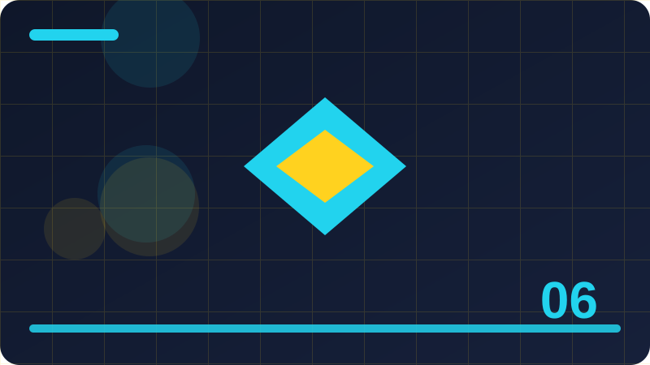

Chapter 6: Making Decisions with if and case

Section 1: What a Decision Really Is
Let us take what a decision really is slowly, one step at a time. In plain words, A decision in a program is a point where the program chooses between two or more paths based on a value it has at that moment. You do not need to memorise anything yet. First, get the picture clear in your mind, and let the code come second. For example, a program might show one message to a logged-in user and a different message to a visitor. This section follows that same order, so read for understanding first, and save the details for the example that follows.
To understand this properly, it helps to break it into pieces. Ruby makes the choice by testing a condition, which is an expression that is either true or false, and then running only the branch that matches that result. Each piece on its own is easy, and the skill lies in seeing how the pieces fit together. Ruby gives you simple building blocks on purpose, and real programs are mostly these blocks combined in sensible ways. So when an example looks long, do not panic: it is usually just a few short ideas repeated.
The code below shows the idea in action, and it is worth studying slowly. Read each line and say, in your own words, what it does. Notice the shape of the code as well as its meaning, because Ruby programs have a rhythm: things open, something happens inside, and then things close again.
logged_in = true
if logged_in
puts "Welcome back!"
else
puts "Please sign in."
endA useful warning before you practise: most errors with decisions come from small slips, not from a lack of talent. A missing word, a line in the wrong order, or a value that is not quite what you assumed can all change the result. The good news is that Ruby usually tells you something is wrong, and the error message points near the problem, even if it does not always explain it perfectly. Read the message calmly and check the line it mentions, plus the lines just above it.
In short, this section added one more tool to your growing toolbox, and tools are only useful when you actually practise with them. So before you turn the page, try to write two or three lines of your own that use this idea, even if they are silly or simple. A silly example you wrote yourself teaches more than a perfect example you only read.
Small experiments teach more than long reading, so change one value and watch what happens.
If a result surprises you, that surprise is useful, because it shows exactly where your mental model needs fixing.
Write the idea in your own words in a notebook, without looking at this page, and then compare the two versions.
A short program you fully understand is worth far more than a long program you only half follow.
When you feel stuck, shrink the problem until it fits in five lines, and solve that tiny version first.
Check: In your own words, what does a program decision choose between?
Section 2: if in Plain Words
This section is about if in plain words. In plain words, The if keyword tells Ruby to run a block of code only when a condition is true, and to skip it when the condition is false. That idea may sound simple, and it is simple on purpose. Ruby was designed to read a little like ordinary language, so when you understand the idea in words first, the code that follows feels familiar instead of strange. For example, a shop program might print a discount message only when the basket total is high enough.
Here is how it works in practice. Ruby reads the condition after if, and if it is true, it runs the lines up to end, while if it is false, it jumps straight past end. Think of it like a small decision, or a small job, that Ruby carries out for you in a fixed order. Ruby reads your program from the top, follows each instruction in turn, and does exactly what you wrote, nothing more and nothing less. When you are unsure what a program will do, slow down and trace it by hand, pretending that you are Ruby and following each line yourself. This habit of tracing is one of the most useful skills you will ever build, and it works for every topic in this book, not just this one.
Now look at the code example below and walk through it line by line. Start at the first line and ask yourself what Ruby knows at that point, then move to the next line and update your picture. The example is deliberately short, because a short example lets you see the whole idea at once. Try to predict the output before you imagine running it, and if your prediction is wrong, work out which line changed your mind. That moment, when prediction meets reality, is where real learning happens.
total = 120
if total > 100
puts "You qualify for free delivery."
endThere is one common mistake to watch out for here. Beginners often rush past this idea and assume it works the way they hoped, rather than the way Ruby actually does it. The fix is simple: test with a tiny example, print the result, and compare it with what you expected. If the two do not match, do not just change things at random. Instead, read the code again, slowly, and find the first line where your expectation and Ruby's behaviour part company. That line is your lesson. Testing like this will save you hours of confusion later.
To sum up this section, remember the main idea in one sentence: The if keyword tells Ruby to run a block of code only when a condition is true, and to skip it when the condition is false. If you can say that sentence without looking, and give a tiny example of your own, you have understood the section. If you cannot yet do that, read the example once more and try again, because understanding matters more than speed. There is no prize for rushing through a book, and there is a real reward for building each idea properly before moving on.
Check: What does Ruby do when an if condition is false?
Section 3: The Condition Inside if
Let us take the condition inside if slowly, one step at a time. In plain words, A condition is any expression that Ruby can judge as true or false, such as a comparison between two numbers. You do not need to memorise anything yet. First, get the picture clear in your mind, and let the code come second. For example, checking whether a player's score has passed fifty is a condition that controls what happens next. This section follows that same order, so read for understanding first, and save the details for the example that follows.
To understand this properly, it helps to break it into pieces. Ruby evaluates the condition first, before it decides anything else, so the values used in the condition must already exist and make sense. Each piece on its own is easy, and the skill lies in seeing how the pieces fit together. Ruby gives you simple building blocks on purpose, and real programs are mostly these blocks combined in sensible ways. So when an example looks long, do not panic: it is usually just a few short ideas repeated.
The code below shows the idea in action, and it is worth studying slowly. Read each line and say, in your own words, what it does. Notice the shape of the code as well as its meaning, because Ruby programs have a rhythm: things open, something happens inside, and then things close again.
score = 60
if score >= 50
puts "Level complete!"
endA useful warning before you practise: most errors with decisions come from small slips, not from a lack of talent. A missing word, a line in the wrong order, or a value that is not quite what you assumed can all change the result. The good news is that Ruby usually tells you something is wrong, and the error message points near the problem, even if it does not always explain it perfectly. Read the message calmly and check the line it mentions, plus the lines just above it.
In short, this section added one more tool to your growing toolbox, and tools are only useful when you actually practise with them. So before you turn the page, try to write two or three lines of your own that use this idea, even if they are silly or simple. A silly example you wrote yourself teaches more than a perfect example you only read.
Write the idea in your own words in a notebook, without looking at this page, and then compare the two versions.
A short program you fully understand is worth far more than a long program you only half follow.
When you feel stuck, shrink the problem until it fits in five lines, and solve that tiny version first.
Good programmers test their assumptions early, instead of trusting a guess for hours.
Explain the code to an imaginary friend, and notice which sentence makes you hesitate, because that is where to look next.
Check: Why must the values in a condition already exist before Ruby tests it?
Section 4: Writing Your First if
This section is about writing your first if. In plain words, Writing an if means putting the keyword if, then a condition, then the lines to run, and finally the word end. That idea may sound simple, and it is simple on purpose. Ruby was designed to read a little like ordinary language, so when you understand the idea in words first, the code that follows feels familiar instead of strange. For example, a weather program might print a warning only when the temperature drops below freezing.
Here is how it works in practice. The end keyword is essential, because it tells Ruby where the conditional block stops and normal code starts again. Think of it like a small decision, or a small job, that Ruby carries out for you in a fixed order. Ruby reads your program from the top, follows each instruction in turn, and does exactly what you wrote, nothing more and nothing less. When you are unsure what a program will do, slow down and trace it by hand, pretending that you are Ruby and following each line yourself. This habit of tracing is one of the most useful skills you will ever build, and it works for every topic in this book, not just this one.
Now look at the code example below and walk through it line by line. Start at the first line and ask yourself what Ruby knows at that point, then move to the next line and update your picture. The example is deliberately short, because a short example lets you see the whole idea at once. Try to predict the output before you imagine running it, and if your prediction is wrong, work out which line changed your mind. That moment, when prediction meets reality, is where real learning happens.
temperature = -2
if temperature < 0
puts "It is freezing outside."
end
puts "Have a good day."There is one common mistake to watch out for here. Beginners often rush past this idea and assume it works the way they hoped, rather than the way Ruby actually does it. The fix is simple: test with a tiny example, print the result, and compare it with what you expected. If the two do not match, do not just change things at random. Instead, read the code again, slowly, and find the first line where your expectation and Ruby's behaviour part company. That line is your lesson. Testing like this will save you hours of confusion later.
To sum up this section, remember the main idea in one sentence: Writing an if means putting the keyword if, then a condition, then the lines to run, and finally the word end. If you can say that sentence without looking, and give a tiny example of your own, you have understood the section. If you cannot yet do that, read the example once more and try again, because understanding matters more than speed. There is no prize for rushing through a book, and there is a real reward for building each idea properly before moving on.
Check: What job does the word end do in an if statement?
Section 5: else: The Other Road
Let us take else: the other road slowly, one step at a time. In plain words, The else branch gives Ruby an alternative block to run when the if condition is false, so something always happens. You do not need to memorise anything yet. First, get the picture clear in your mind, and let the code come second. For example, a ticket program might print one price for adults and a different price for everyone else. This section follows that same order, so read for understanding first, and save the details for the example that follows.
To understand this properly, it helps to break it into pieces. Ruby runs either the if block or the else block, never both, which keeps the two outcomes cleanly separated. Each piece on its own is easy, and the skill lies in seeing how the pieces fit together. Ruby gives you simple building blocks on purpose, and real programs are mostly these blocks combined in sensible ways. So when an example looks long, do not panic: it is usually just a few short ideas repeated.
The code below shows the idea in action, and it is worth studying slowly. Read each line and say, in your own words, what it does. Notice the shape of the code as well as its meaning, because Ruby programs have a rhythm: things open, something happens inside, and then things close again.
age = 15
if age >= 18
puts "Adult ticket."
else
puts "Child ticket."
endA useful warning before you practise: most errors with decisions come from small slips, not from a lack of talent. A missing word, a line in the wrong order, or a value that is not quite what you assumed can all change the result. The good news is that Ruby usually tells you something is wrong, and the error message points near the problem, even if it does not always explain it perfectly. Read the message calmly and check the line it mentions, plus the lines just above it.
In short, this section added one more tool to your growing toolbox, and tools are only useful when you actually practise with them. So before you turn the page, try to write two or three lines of your own that use this idea, even if they are silly or simple. A silly example you wrote yourself teaches more than a perfect example you only read.
When you feel stuck, shrink the problem until it fits in five lines, and solve that tiny version first.
Good programmers test their assumptions early, instead of trusting a guess for hours.
Explain the code to an imaginary friend, and notice which sentence makes you hesitate, because that is where to look next.
Keep your examples small while you are learning, and let them grow only after the small version works.
Running code and reading its output is how a vague idea becomes a solid skill.
Notice how each line has one job, and how those small jobs add up to a useful result.
Check: Can Ruby run both the if block and the else block for the same test?
Section 6: elsif: More Than Two Roads
This section is about elsif: more than two roads. In plain words, The elsif keyword lets a program test a second condition when the first one is false, and a third, and so on, in a single chain. That idea may sound simple, and it is simple on purpose. Ruby was designed to read a little like ordinary language, so when you understand the idea in words first, the code that follows feels familiar instead of strange. For example, a grading program might award different messages for an A, a B, or anything lower.
Here is how it works in practice. Ruby tests the conditions from top to bottom and runs only the first branch whose condition is true, skipping the rest entirely. Think of it like a small decision, or a small job, that Ruby carries out for you in a fixed order. Ruby reads your program from the top, follows each instruction in turn, and does exactly what you wrote, nothing more and nothing less. When you are unsure what a program will do, slow down and trace it by hand, pretending that you are Ruby and following each line yourself. This habit of tracing is one of the most useful skills you will ever build, and it works for every topic in this book, not just this one.
Now look at the code example below and walk through it line by line. Start at the first line and ask yourself what Ruby knows at that point, then move to the next line and update your picture. The example is deliberately short, because a short example lets you see the whole idea at once. Try to predict the output before you imagine running it, and if your prediction is wrong, work out which line changed your mind. That moment, when prediction meets reality, is where real learning happens.
mark = 75
if mark >= 90
puts "Excellent!"
elsif mark >= 60
puts "Well done."
else
puts "Keep practising."
endThere is one common mistake to watch out for here. Beginners often rush past this idea and assume it works the way they hoped, rather than the way Ruby actually does it. The fix is simple: test with a tiny example, print the result, and compare it with what you expected. If the two do not match, do not just change things at random. Instead, read the code again, slowly, and find the first line where your expectation and Ruby's behaviour part company. That line is your lesson. Testing like this will save you hours of confusion later.
To sum up this section, remember the main idea in one sentence: The elsif keyword lets a program test a second condition when the first one is false, and a third, and so on, in a single chain. If you can say that sentence without looking, and give a tiny example of your own, you have understood the section. If you cannot yet do that, read the example once more and try again, because understanding matters more than speed. There is no prize for rushing through a book, and there is a real reward for building each idea properly before moving on.
Check: In an if and elsif chain, how many branches does Ruby run?
Section 7: Reading an if Chain from Top to Bottom
Let us take reading an if chain from top to bottom slowly, one step at a time. In plain words, Reading an if chain from the top means checking each condition in order until one is true, because the order decides which branch wins. You do not need to memorise anything yet. First, get the picture clear in your mind, and let the code come second. For example, testing for a score of ninety before testing for sixty matters, because a ninety also passes sixty. This section follows that same order, so read for understanding first, and save the details for the example that follows.
To understand this properly, it helps to break it into pieces. If the branches were written in the wrong order, the first matching branch would swallow cases that belonged to a later branch. Each piece on its own is easy, and the skill lies in seeing how the pieces fit together. Ruby gives you simple building blocks on purpose, and real programs are mostly these blocks combined in sensible ways. So when an example looks long, do not panic: it is usually just a few short ideas repeated.
The code below shows the idea in action, and it is worth studying slowly. Read each line and say, in your own words, what it does. Notice the shape of the code as well as its meaning, because Ruby programs have a rhythm: things open, something happens inside, and then things close again.
score = 95
if score >= 90
puts "Top grade."
elsif score >= 60
puts "Pass."
else
puts "Not yet."
endA useful warning before you practise: most errors with decisions come from small slips, not from a lack of talent. A missing word, a line in the wrong order, or a value that is not quite what you assumed can all change the result. The good news is that Ruby usually tells you something is wrong, and the error message points near the problem, even if it does not always explain it perfectly. Read the message calmly and check the line it mentions, plus the lines just above it.
In short, this section added one more tool to your growing toolbox, and tools are only useful when you actually practise with them. So before you turn the page, try to write two or three lines of your own that use this idea, even if they are silly or simple. A silly example you wrote yourself teaches more than a perfect example you only read.
Explain the code to an imaginary friend, and notice which sentence makes you hesitate, because that is where to look next.
Keep your examples small while you are learning, and let them grow only after the small version works.
Running code and reading its output is how a vague idea becomes a solid skill.
Notice how each line has one job, and how those small jobs add up to a useful result.
If you can predict the output before you run the code, you understand it, so practise predicting first.
Check: Why does the order of branches in an if chain matter?
Section 8: Comparing Numbers with if
This section is about comparing numbers with if. In plain words, Comparing numbers with if means using operators like greater than and less than to turn two numbers into a true or false answer. That idea may sound simple, and it is simple on purpose. Ruby was designed to read a little like ordinary language, so when you understand the idea in words first, the code that follows feels familiar instead of strange. For example, a game might check whether a player still has lives left before letting them continue.
Here is how it works in practice. Ruby compares the actual numeric values, so ten is greater than nine, and the comparison result decides the branch. Think of it like a small decision, or a small job, that Ruby carries out for you in a fixed order. Ruby reads your program from the top, follows each instruction in turn, and does exactly what you wrote, nothing more and nothing less. When you are unsure what a program will do, slow down and trace it by hand, pretending that you are Ruby and following each line yourself. This habit of tracing is one of the most useful skills you will ever build, and it works for every topic in this book, not just this one.
Now look at the code example below and walk through it line by line. Start at the first line and ask yourself what Ruby knows at that point, then move to the next line and update your picture. The example is deliberately short, because a short example lets you see the whole idea at once. Try to predict the output before you imagine running it, and if your prediction is wrong, work out which line changed your mind. That moment, when prediction meets reality, is where real learning happens.
lives = 0
if lives > 0
puts "Keep playing."
else
puts "Game over."
endThere is one common mistake to watch out for here. Beginners often rush past this idea and assume it works the way they hoped, rather than the way Ruby actually does it. The fix is simple: test with a tiny example, print the result, and compare it with what you expected. If the two do not match, do not just change things at random. Instead, read the code again, slowly, and find the first line where your expectation and Ruby's behaviour part company. That line is your lesson. Testing like this will save you hours of confusion later.
To sum up this section, remember the main idea in one sentence: Comparing numbers with if means using operators like greater than and less than to turn two numbers into a true or false answer. If you can say that sentence without looking, and give a tiny example of your own, you have understood the section. If you cannot yet do that, read the example once more and try again, because understanding matters more than speed. There is no prize for rushing through a book, and there is a real reward for building each idea properly before moving on.
Check: What does a number comparison produce for Ruby to decide on?
Section 9: Comparing Strings with if
Let us take comparing strings with if slowly, one step at a time. In plain words, Comparing strings with if means testing whether two pieces of text are equal, or whether one comes before the other alphabetically. You do not need to memorise anything yet. First, get the picture clear in your mind, and let the code come second. For example, a program might greet a user by name only when the name matches an expected value. This section follows that same order, so read for understanding first, and save the details for the example that follows.
To understand this properly, it helps to break it into pieces. Ruby compares strings character by character, and exact spelling and capital letters matter, so Ruby and ruby are not the same string. Each piece on its own is easy, and the skill lies in seeing how the pieces fit together. Ruby gives you simple building blocks on purpose, and real programs are mostly these blocks combined in sensible ways. So when an example looks long, do not panic: it is usually just a few short ideas repeated.
The code below shows the idea in action, and it is worth studying slowly. Read each line and say, in your own words, what it does. Notice the shape of the code as well as its meaning, because Ruby programs have a rhythm: things open, something happens inside, and then things close again.
name = "Ada"
if name == "Ada"
puts "Hello, Ada!"
else
puts "Hello, guest!"
endA useful warning before you practise: most errors with decisions come from small slips, not from a lack of talent. A missing word, a line in the wrong order, or a value that is not quite what you assumed can all change the result. The good news is that Ruby usually tells you something is wrong, and the error message points near the problem, even if it does not always explain it perfectly. Read the message calmly and check the line it mentions, plus the lines just above it.
In short, this section added one more tool to your growing toolbox, and tools are only useful when you actually practise with them. So before you turn the page, try to write two or three lines of your own that use this idea, even if they are silly or simple. A silly example you wrote yourself teaches more than a perfect example you only read.
Running code and reading its output is how a vague idea becomes a solid skill.
Notice how each line has one job, and how those small jobs add up to a useful result.
If you can predict the output before you run the code, you understand it, so practise predicting first.
Try reading the example aloud, line by line, before you run it anywhere.
Small experiments teach more than long reading, so change one value and watch what happens.
If a result surprises you, that surprise is useful, because it shows exactly where your mental model needs fixing.
Check: Why are Ruby and ruby different strings when Ruby compares them?
Section 10: Truthy and Falsy Values
This section is about truthy and falsy values. In plain words, In Ruby, every value except false and nil counts as truthy, which means it makes an if condition pass. That idea may sound simple, and it is simple on purpose. Ruby was designed to read a little like ordinary language, so when you understand the idea in words first, the code that follows feels familiar instead of strange. For example, the number zero and an empty string are both truthy in Ruby, which surprises people from other languages.
Here is how it works in practice. This rule is simple once you learn it: only false and nil fail a condition, and everything else, including zero, passes. Think of it like a small decision, or a small job, that Ruby carries out for you in a fixed order. Ruby reads your program from the top, follows each instruction in turn, and does exactly what you wrote, nothing more and nothing less. When you are unsure what a program will do, slow down and trace it by hand, pretending that you are Ruby and following each line yourself. This habit of tracing is one of the most useful skills you will ever build, and it works for every topic in this book, not just this one.
Now look at the code example below and walk through it line by line. Start at the first line and ask yourself what Ruby knows at that point, then move to the next line and update your picture. The example is deliberately short, because a short example lets you see the whole idea at once. Try to predict the output before you imagine running it, and if your prediction is wrong, work out which line changed your mind. That moment, when prediction meets reality, is where real learning happens.
count = 0
if count
puts "The value is truthy."
else
puts "The value is falsy."
endThere is one common mistake to watch out for here. Beginners often rush past this idea and assume it works the way they hoped, rather than the way Ruby actually does it. The fix is simple: test with a tiny example, print the result, and compare it with what you expected. If the two do not match, do not just change things at random. Instead, read the code again, slowly, and find the first line where your expectation and Ruby's behaviour part company. That line is your lesson. Testing like this will save you hours of confusion later.
To sum up this section, remember the main idea in one sentence: In Ruby, every value except false and nil counts as truthy, which means it makes an if condition pass. If you can say that sentence without looking, and give a tiny example of your own, you have understood the section. If you cannot yet do that, read the example once more and try again, because understanding matters more than speed. There is no prize for rushing through a book, and there is a real reward for building each idea properly before moving on.
Check: Which two values in Ruby are falsy, and what does that mean for if?
Section 11: nil in a Decision
Let us take nil in a decision slowly, one step at a time. In plain words, The value nil means nothing, or no value yet, and it counts as falsy, so an if test on nil takes the false branch. You do not need to memorise anything yet. First, get the picture clear in your mind, and let the code come second. For example, a program might check whether a nickname has been set before trying to display it. This section follows that same order, so read for understanding first, and save the details for the example that follows.
To understand this properly, it helps to break it into pieces. Testing for nil is a safe way to avoid errors, because it lets the program handle a missing value gracefully instead of crashing. Each piece on its own is easy, and the skill lies in seeing how the pieces fit together. Ruby gives you simple building blocks on purpose, and real programs are mostly these blocks combined in sensible ways. So when an example looks long, do not panic: it is usually just a few short ideas repeated.
The code below shows the idea in action, and it is worth studying slowly. Read each line and say, in your own words, what it does. Notice the shape of the code as well as its meaning, because Ruby programs have a rhythm: things open, something happens inside, and then things close again.
nickname = nil
if nickname
puts nickname
else
puts "No nickname set yet."
endA useful warning before you practise: most errors with decisions come from small slips, not from a lack of talent. A missing word, a line in the wrong order, or a value that is not quite what you assumed can all change the result. The good news is that Ruby usually tells you something is wrong, and the error message points near the problem, even if it does not always explain it perfectly. Read the message calmly and check the line it mentions, plus the lines just above it.
In short, this section added one more tool to your growing toolbox, and tools are only useful when you actually practise with them. So before you turn the page, try to write two or three lines of your own that use this idea, even if they are silly or simple. A silly example you wrote yourself teaches more than a perfect example you only read.
If you can predict the output before you run the code, you understand it, so practise predicting first.
Try reading the example aloud, line by line, before you run it anywhere.
Small experiments teach more than long reading, so change one value and watch what happens.
If a result surprises you, that surprise is useful, because it shows exactly where your mental model needs fixing.
Write the idea in your own words in a notebook, without looking at this page, and then compare the two versions.
Check: Why is testing for nil a safe habit before using a value?
Section 12: Combining Conditions with &&
This section is about combining conditions with &&. In plain words, The && operator joins two conditions and produces true only when both conditions are true at the same time. That idea may sound simple, and it is simple on purpose. Ruby was designed to read a little like ordinary language, so when you understand the idea in words first, the code that follows feels familiar instead of strange. For example, a ride program might require a passenger to be both tall enough and old enough before allowing them on.
Here is how it works in practice. Ruby checks the left condition first, and if it is false, it does not need to check the right one, because the whole result is already false. Think of it like a small decision, or a small job, that Ruby carries out for you in a fixed order. Ruby reads your program from the top, follows each instruction in turn, and does exactly what you wrote, nothing more and nothing less. When you are unsure what a program will do, slow down and trace it by hand, pretending that you are Ruby and following each line yourself. This habit of tracing is one of the most useful skills you will ever build, and it works for every topic in this book, not just this one.
Now look at the code example below and walk through it line by line. Start at the first line and ask yourself what Ruby knows at that point, then move to the next line and update your picture. The example is deliberately short, because a short example lets you see the whole idea at once. Try to predict the output before you imagine running it, and if your prediction is wrong, work out which line changed your mind. That moment, when prediction meets reality, is where real learning happens.
age = 20
tall = true
if age >= 18 && tall
puts "You may ride."
else
puts "Not yet."
endThere is one common mistake to watch out for here. Beginners often rush past this idea and assume it works the way they hoped, rather than the way Ruby actually does it. The fix is simple: test with a tiny example, print the result, and compare it with what you expected. If the two do not match, do not just change things at random. Instead, read the code again, slowly, and find the first line where your expectation and Ruby's behaviour part company. That line is your lesson. Testing like this will save you hours of confusion later.
To sum up this section, remember the main idea in one sentence: The && operator joins two conditions and produces true only when both conditions are true at the same time. If you can say that sentence without looking, and give a tiny example of your own, you have understood the section. If you cannot yet do that, read the example once more and try again, because understanding matters more than speed. There is no prize for rushing through a book, and there is a real reward for building each idea properly before moving on.
Check: When does an && combination produce true?
Section 13: Choosing with ||
Let us take choosing with || slowly, one step at a time. In plain words, The || operator joins two conditions and produces true when at least one of the conditions is true. You do not need to memorise anything yet. First, get the picture clear in your mind, and let the code come second. For example, a discount might apply when a shopper is either a student or a senior citizen. This section follows that same order, so read for understanding first, and save the details for the example that follows.
To understand this properly, it helps to break it into pieces. Ruby checks the left condition first, and if it is true, the whole result is already true, so it can skip the right side. Each piece on its own is easy, and the skill lies in seeing how the pieces fit together. Ruby gives you simple building blocks on purpose, and real programs are mostly these blocks combined in sensible ways. So when an example looks long, do not panic: it is usually just a few short ideas repeated.
The code below shows the idea in action, and it is worth studying slowly. Read each line and say, in your own words, what it does. Notice the shape of the code as well as its meaning, because Ruby programs have a rhythm: things open, something happens inside, and then things close again.
student = false
senior = true
if student || senior
puts "Discount applies."
else
puts "Full price."
endA useful warning before you practise: most errors with decisions come from small slips, not from a lack of talent. A missing word, a line in the wrong order, or a value that is not quite what you assumed can all change the result. The good news is that Ruby usually tells you something is wrong, and the error message points near the problem, even if it does not always explain it perfectly. Read the message calmly and check the line it mentions, plus the lines just above it.
In short, this section added one more tool to your growing toolbox, and tools are only useful when you actually practise with them. So before you turn the page, try to write two or three lines of your own that use this idea, even if they are silly or simple. A silly example you wrote yourself teaches more than a perfect example you only read.
Small experiments teach more than long reading, so change one value and watch what happens.
If a result surprises you, that surprise is useful, because it shows exactly where your mental model needs fixing.
Write the idea in your own words in a notebook, without looking at this page, and then compare the two versions.
A short program you fully understand is worth far more than a long program you only half follow.
When you feel stuck, shrink the problem until it fits in five lines, and solve that tiny version first.
Check: When does an || combination produce false?
Section 14: Negating with !
This section is about negating with !. In plain words, The ! operator flips a true value to false and a false value to true, letting you test for the opposite of a condition. That idea may sound simple, and it is simple on purpose. Ruby was designed to read a little like ordinary language, so when you understand the idea in words first, the code that follows feels familiar instead of strange. For example, a program might show a warning when a task is not yet finished.
Here is how it works in practice. Negation is handy when the natural way to say something is negative, but it should be used sparingly so code stays easy to read. Think of it like a small decision, or a small job, that Ruby carries out for you in a fixed order. Ruby reads your program from the top, follows each instruction in turn, and does exactly what you wrote, nothing more and nothing less. When you are unsure what a program will do, slow down and trace it by hand, pretending that you are Ruby and following each line yourself. This habit of tracing is one of the most useful skills you will ever build, and it works for every topic in this book, not just this one.
Now look at the code example below and walk through it line by line. Start at the first line and ask yourself what Ruby knows at that point, then move to the next line and update your picture. The example is deliberately short, because a short example lets you see the whole idea at once. Try to predict the output before you imagine running it, and if your prediction is wrong, work out which line changed your mind. That moment, when prediction meets reality, is where real learning happens.
finished = false
if !finished
puts "Still to do."
else
puts "All done."
endThere is one common mistake to watch out for here. Beginners often rush past this idea and assume it works the way they hoped, rather than the way Ruby actually does it. The fix is simple: test with a tiny example, print the result, and compare it with what you expected. If the two do not match, do not just change things at random. Instead, read the code again, slowly, and find the first line where your expectation and Ruby's behaviour part company. That line is your lesson. Testing like this will save you hours of confusion later.
To sum up this section, remember the main idea in one sentence: The ! operator flips a true value to false and a false value to true, letting you test for the opposite of a condition. If you can say that sentence without looking, and give a tiny example of your own, you have understood the section. If you cannot yet do that, read the example once more and try again, because understanding matters more than speed. There is no prize for rushing through a book, and there is a real reward for building each idea properly before moving on.
Check: What does the ! operator do to a true value?
Section 15: Parentheses Make Order Clear
Let us take parentheses make order clear slowly, one step at a time. In plain words, Parentheses group parts of a condition together, so Ruby evaluates the grouped part first and the meaning stays clear. You do not need to memorise anything yet. First, get the picture clear in your mind, and let the code come second. For example, a rule that needs both age and membership, or a special pass, is much clearer with parentheses around the right pieces. This section follows that same order, so read for understanding first, and save the details for the example that follows.
To understand this properly, it helps to break it into pieces. Without parentheses, Ruby follows its own precedence rules, which may not match what you meant, so grouping removes the doubt. Each piece on its own is easy, and the skill lies in seeing how the pieces fit together. Ruby gives you simple building blocks on purpose, and real programs are mostly these blocks combined in sensible ways. So when an example looks long, do not panic: it is usually just a few short ideas repeated.
The code below shows the idea in action, and it is worth studying slowly. Read each line and say, in your own words, what it does. Notice the shape of the code as well as its meaning, because Ruby programs have a rhythm: things open, something happens inside, and then things close again.
age = 16
member = true
pass = false
if (age >= 18 || pass) && member
puts "Entry allowed."
else
puts "Entry refused."
endA useful warning before you practise: most errors with decisions come from small slips, not from a lack of talent. A missing word, a line in the wrong order, or a value that is not quite what you assumed can all change the result. The good news is that Ruby usually tells you something is wrong, and the error message points near the problem, even if it does not always explain it perfectly. Read the message calmly and check the line it mentions, plus the lines just above it.
In short, this section added one more tool to your growing toolbox, and tools are only useful when you actually practise with them. So before you turn the page, try to write two or three lines of your own that use this idea, even if they are silly or simple. A silly example you wrote yourself teaches more than a perfect example you only read.
Write the idea in your own words in a notebook, without looking at this page, and then compare the two versions.
A short program you fully understand is worth far more than a long program you only half follow.
When you feel stuck, shrink the problem until it fits in five lines, and solve that tiny version first.
Good programmers test their assumptions early, instead of trusting a guess for hours.
Explain the code to an imaginary friend, and notice which sentence makes you hesitate, because that is where to look next.
Check: Why do parentheses help when a condition mixes && and ||?
Section 16: Nested if: Decisions Inside Decisions
This section is about nested if: decisions inside decisions. In plain words, A nested if is an if statement placed inside another if block, so the inner decision is only reached when the outer one passes. That idea may sound simple, and it is simple on purpose. Ruby was designed to read a little like ordinary language, so when you understand the idea in words first, the code that follows feels familiar instead of strange. For example, a program might first check whether a user is signed in, and only then check whether they are an admin.
Here is how it works in practice. Nesting works because each if has its own end, and the inner if is simply part of the outer block's lines. Think of it like a small decision, or a small job, that Ruby carries out for you in a fixed order. Ruby reads your program from the top, follows each instruction in turn, and does exactly what you wrote, nothing more and nothing less. When you are unsure what a program will do, slow down and trace it by hand, pretending that you are Ruby and following each line yourself. This habit of tracing is one of the most useful skills you will ever build, and it works for every topic in this book, not just this one.
Now look at the code example below and walk through it line by line. Start at the first line and ask yourself what Ruby knows at that point, then move to the next line and update your picture. The example is deliberately short, because a short example lets you see the whole idea at once. Try to predict the output before you imagine running it, and if your prediction is wrong, work out which line changed your mind. That moment, when prediction meets reality, is where real learning happens.
signed_in = true
admin = true
if signed_in
if admin
puts "Admin panel."
else
puts "Member area."
end
else
puts "Please sign in."
endThere is one common mistake to watch out for here. Beginners often rush past this idea and assume it works the way they hoped, rather than the way Ruby actually does it. The fix is simple: test with a tiny example, print the result, and compare it with what you expected. If the two do not match, do not just change things at random. Instead, read the code again, slowly, and find the first line where your expectation and Ruby's behaviour part company. That line is your lesson. Testing like this will save you hours of confusion later.
To sum up this section, remember the main idea in one sentence: A nested if is an if statement placed inside another if block, so the inner decision is only reached when the outer one passes. If you can say that sentence without looking, and give a tiny example of your own, you have understood the section. If you cannot yet do that, read the example once more and try again, because understanding matters more than speed. There is no prize for rushing through a book, and there is a real reward for building each idea properly before moving on.
Check: When does Ruby reach an inner if inside an outer if?
Section 17: Keeping Nested if Readable
Let us take keeping nested if readable slowly, one step at a time. In plain words, Keeping nested if readable means limiting how deep the nesting goes, because deep nesting is hard to follow and easy to break. You do not need to memorise anything yet. First, get the picture clear in your mind, and let the code come second. For example, a program with four levels of nesting forces a reader to hold four conditions in mind at once. This section follows that same order, so read for understanding first, and save the details for the example that follows.
To understand this properly, it helps to break it into pieces. A good habit is to handle simple cases first and return or branch early, so the main logic stays at a shallow level. Each piece on its own is easy, and the skill lies in seeing how the pieces fit together. Ruby gives you simple building blocks on purpose, and real programs are mostly these blocks combined in sensible ways. So when an example looks long, do not panic: it is usually just a few short ideas repeated.
The code below shows the idea in action, and it is worth studying slowly. Read each line and say, in your own words, what it does. Notice the shape of the code as well as its meaning, because Ruby programs have a rhythm: things open, something happens inside, and then things close again.
age = 25
member = true
if age >= 18
if member
puts "Welcome, member."
end
endA useful warning before you practise: most errors with decisions come from small slips, not from a lack of talent. A missing word, a line in the wrong order, or a value that is not quite what you assumed can all change the result. The good news is that Ruby usually tells you something is wrong, and the error message points near the problem, even if it does not always explain it perfectly. Read the message calmly and check the line it mentions, plus the lines just above it.
In short, this section added one more tool to your growing toolbox, and tools are only useful when you actually practise with them. So before you turn the page, try to write two or three lines of your own that use this idea, even if they are silly or simple. A silly example you wrote yourself teaches more than a perfect example you only read.
When you feel stuck, shrink the problem until it fits in five lines, and solve that tiny version first.
Good programmers test their assumptions early, instead of trusting a guess for hours.
Explain the code to an imaginary friend, and notice which sentence makes you hesitate, because that is where to look next.
Keep your examples small while you are learning, and let them grow only after the small version works.
Running code and reading its output is how a vague idea becomes a solid skill.
Check: Why is deep nesting harder to read than shallow code?
Section 18: One-Line if with a Modifier
This section is about one-line if with a modifier. In plain words, A modifier if puts the if condition after a single statement, so the statement runs only when the condition is true. That idea may sound simple, and it is simple on purpose. Ruby was designed to read a little like ordinary language, so when you understand the idea in words first, the code that follows feels familiar instead of strange. For example, a program might print a warning on one line only when a value is negative.
Here is how it works in practice. Modifier if is best for short, simple actions, because a long line with a trailing condition becomes hard to read quickly. Think of it like a small decision, or a small job, that Ruby carries out for you in a fixed order. Ruby reads your program from the top, follows each instruction in turn, and does exactly what you wrote, nothing more and nothing less. When you are unsure what a program will do, slow down and trace it by hand, pretending that you are Ruby and following each line yourself. This habit of tracing is one of the most useful skills you will ever build, and it works for every topic in this book, not just this one.
Now look at the code example below and walk through it line by line. Start at the first line and ask yourself what Ruby knows at that point, then move to the next line and update your picture. The example is deliberately short, because a short example lets you see the whole idea at once. Try to predict the output before you imagine running it, and if your prediction is wrong, work out which line changed your mind. That moment, when prediction meets reality, is where real learning happens.
balance = -5
puts "Overdrawn!" if balance < 0There is one common mistake to watch out for here. Beginners often rush past this idea and assume it works the way they hoped, rather than the way Ruby actually does it. The fix is simple: test with a tiny example, print the result, and compare it with what you expected. If the two do not match, do not just change things at random. Instead, read the code again, slowly, and find the first line where your expectation and Ruby's behaviour part company. That line is your lesson. Testing like this will save you hours of confusion later.
To sum up this section, remember the main idea in one sentence: A modifier if puts the if condition after a single statement, so the statement runs only when the condition is true. If you can say that sentence without looking, and give a tiny example of your own, you have understood the section. If you cannot yet do that, read the example once more and try again, because understanding matters more than speed. There is no prize for rushing through a book, and there is a real reward for building each idea properly before moving on.
Check: When is a modifier if a good choice, and when is it not?
Section 19: unless: The Opposite of if
Let us take unless: the opposite of if slowly, one step at a time. In plain words, The unless keyword runs its block only when its condition is false, which is the exact opposite of if. You do not need to memorise anything yet. First, get the picture clear in your mind, and let the code come second. For example, a program might print a reminder unless a task is already marked as done. This section follows that same order, so read for understanding first, and save the details for the example that follows.
To understand this properly, it helps to break it into pieces. Unless reads naturally in English for negative conditions, and it can make code clearer than an if with a negated condition. Each piece on its own is easy, and the skill lies in seeing how the pieces fit together. Ruby gives you simple building blocks on purpose, and real programs are mostly these blocks combined in sensible ways. So when an example looks long, do not panic: it is usually just a few short ideas repeated.
The code below shows the idea in action, and it is worth studying slowly. Read each line and say, in your own words, what it does. Notice the shape of the code as well as its meaning, because Ruby programs have a rhythm: things open, something happens inside, and then things close again.
done = false
unless done
puts "Reminder: finish this task."
endA useful warning before you practise: most errors with decisions come from small slips, not from a lack of talent. A missing word, a line in the wrong order, or a value that is not quite what you assumed can all change the result. The good news is that Ruby usually tells you something is wrong, and the error message points near the problem, even if it does not always explain it perfectly. Read the message calmly and check the line it mentions, plus the lines just above it.
In short, this section added one more tool to your growing toolbox, and tools are only useful when you actually practise with them. So before you turn the page, try to write two or three lines of your own that use this idea, even if they are silly or simple. A silly example you wrote yourself teaches more than a perfect example you only read.
Explain the code to an imaginary friend, and notice which sentence makes you hesitate, because that is where to look next.
Keep your examples small while you are learning, and let them grow only after the small version works.
Running code and reading its output is how a vague idea becomes a solid skill.
Notice how each line has one job, and how those small jobs add up to a useful result.
If you can predict the output before you run the code, you understand it, so practise predicting first.
Try reading the example aloud, line by line, before you run it anywhere.
Check: When does an unless block run?
Section 20: unless with else
This section is about unless with else. In plain words, An unless statement can have an else branch, which runs when the unless condition is true. That idea may sound simple, and it is simple on purpose. Ruby was designed to read a little like ordinary language, so when you understand the idea in words first, the code that follows feels familiar instead of strange. For example, a program might print one message unless a shop is closed, and a different message when it is closed.
Here is how it works in practice. Unless with else is legal Ruby, but many programmers avoid it, because the double negative can confuse a reader. Think of it like a small decision, or a small job, that Ruby carries out for you in a fixed order. Ruby reads your program from the top, follows each instruction in turn, and does exactly what you wrote, nothing more and nothing less. When you are unsure what a program will do, slow down and trace it by hand, pretending that you are Ruby and following each line yourself. This habit of tracing is one of the most useful skills you will ever build, and it works for every topic in this book, not just this one.
Now look at the code example below and walk through it line by line. Start at the first line and ask yourself what Ruby knows at that point, then move to the next line and update your picture. The example is deliberately short, because a short example lets you see the whole idea at once. Try to predict the output before you imagine running it, and if your prediction is wrong, work out which line changed your mind. That moment, when prediction meets reality, is where real learning happens.
closed = true
unless closed
puts "Shop is open."
else
puts "Shop is closed."
endThere is one common mistake to watch out for here. Beginners often rush past this idea and assume it works the way they hoped, rather than the way Ruby actually does it. The fix is simple: test with a tiny example, print the result, and compare it with what you expected. If the two do not match, do not just change things at random. Instead, read the code again, slowly, and find the first line where your expectation and Ruby's behaviour part company. That line is your lesson. Testing like this will save you hours of confusion later.
To sum up this section, remember the main idea in one sentence: An unless statement can have an else branch, which runs when the unless condition is true. If you can say that sentence without looking, and give a tiny example of your own, you have understood the section. If you cannot yet do that, read the example once more and try again, because understanding matters more than speed. There is no prize for rushing through a book, and there is a real reward for building each idea properly before moving on.
Check: Why do many programmers avoid unless with else?
Section 21: Ternary Operator in Plain Words
Let us take ternary operator in plain words slowly, one step at a time. In plain words, The ternary operator is a compact way to choose between two values, written as condition, question mark, value, colon, and another value. You do not need to memorise anything yet. First, get the picture clear in your mind, and let the code come second. For example, a program might pick the label adult or minor based on an age, all in a single expression. This section follows that same order, so read for understanding first, and save the details for the example that follows.
To understand this properly, it helps to break it into pieces. The ternary is an expression, which means it produces a value, so it is usually assigned to a variable or printed directly. Each piece on its own is easy, and the skill lies in seeing how the pieces fit together. Ruby gives you simple building blocks on purpose, and real programs are mostly these blocks combined in sensible ways. So when an example looks long, do not panic: it is usually just a few short ideas repeated.
The code below shows the idea in action, and it is worth studying slowly. Read each line and say, in your own words, what it does. Notice the shape of the code as well as its meaning, because Ruby programs have a rhythm: things open, something happens inside, and then things close again.
age = 20
label = age >= 18 ? "adult" : "minor"
puts labelA useful warning before you practise: most errors with decisions come from small slips, not from a lack of talent. A missing word, a line in the wrong order, or a value that is not quite what you assumed can all change the result. The good news is that Ruby usually tells you something is wrong, and the error message points near the problem, even if it does not always explain it perfectly. Read the message calmly and check the line it mentions, plus the lines just above it.
In short, this section added one more tool to your growing toolbox, and tools are only useful when you actually practise with them. So before you turn the page, try to write two or three lines of your own that use this idea, even if they are silly or simple. A silly example you wrote yourself teaches more than a perfect example you only read.
Running code and reading its output is how a vague idea becomes a solid skill.
Notice how each line has one job, and how those small jobs add up to a useful result.
If you can predict the output before you run the code, you understand it, so practise predicting first.
Try reading the example aloud, line by line, before you run it anywhere.
Small experiments teach more than long reading, so change one value and watch what happens.
If a result surprises you, that surprise is useful, because it shows exactly where your mental model needs fixing.
Check: What two values does a ternary expression choose between?
Section 22: When to Use Ternary and When Not To
This section is about when to use ternary and when not to. In plain words, A ternary is a good fit when the choice is short and simple, and a poor fit when either side is long or complicated. That idea may sound simple, and it is simple on purpose. Ruby was designed to read a little like ordinary language, so when you understand the idea in words first, the code that follows feels familiar instead of strange. For example, choosing between two short labels is fine, but building two long messages inside a ternary is hard to read.
Here is how it works in practice. When a ternary starts to feel cramped, an if and else block is almost always the clearer choice. Think of it like a small decision, or a small job, that Ruby carries out for you in a fixed order. Ruby reads your program from the top, follows each instruction in turn, and does exactly what you wrote, nothing more and nothing less. When you are unsure what a program will do, slow down and trace it by hand, pretending that you are Ruby and following each line yourself. This habit of tracing is one of the most useful skills you will ever build, and it works for every topic in this book, not just this one.
Now look at the code example below and walk through it line by line. Start at the first line and ask yourself what Ruby knows at that point, then move to the next line and update your picture. The example is deliberately short, because a short example lets you see the whole idea at once. Try to predict the output before you imagine running it, and if your prediction is wrong, work out which line changed your mind. That moment, when prediction meets reality, is where real learning happens.
score = 85
result = score >= 50 ? "pass" : "fail"
puts resultThere is one common mistake to watch out for here. Beginners often rush past this idea and assume it works the way they hoped, rather than the way Ruby actually does it. The fix is simple: test with a tiny example, print the result, and compare it with what you expected. If the two do not match, do not just change things at random. Instead, read the code again, slowly, and find the first line where your expectation and Ruby's behaviour part company. That line is your lesson. Testing like this will save you hours of confusion later.
To sum up this section, remember the main idea in one sentence: A ternary is a good fit when the choice is short and simple, and a poor fit when either side is long or complicated. If you can say that sentence without looking, and give a tiny example of your own, you have understood the section. If you cannot yet do that, read the example once more and try again, because understanding matters more than speed. There is no prize for rushing through a book, and there is a real reward for building each idea properly before moving on.
Check: Why is a long ternary harder to read than an if and else?
Section 23: case in Plain Words
Let us take case in plain words slowly, one step at a time. In plain words, A case statement compares one value against several possible matches and runs the branch that matches it. You do not need to memorise anything yet. First, get the picture clear in your mind, and let the code come second. For example, a program might turn a number from one to seven into the name of a weekday. This section follows that same order, so read for understanding first, and save the details for the example that follows.
To understand this properly, it helps to break it into pieces. Case is a cleaner alternative to a long if and elsif chain when every branch is testing the same value. Each piece on its own is easy, and the skill lies in seeing how the pieces fit together. Ruby gives you simple building blocks on purpose, and real programs are mostly these blocks combined in sensible ways. So when an example looks long, do not panic: it is usually just a few short ideas repeated.
The code below shows the idea in action, and it is worth studying slowly. Read each line and say, in your own words, what it does. Notice the shape of the code as well as its meaning, because Ruby programs have a rhythm: things open, something happens inside, and then things close again.
day = 3
case day
when 1 then puts "Monday"
when 2 then puts "Tuesday"
when 3 then puts "Wednesday"
else puts "Another day"
endA useful warning before you practise: most errors with decisions come from small slips, not from a lack of talent. A missing word, a line in the wrong order, or a value that is not quite what you assumed can all change the result. The good news is that Ruby usually tells you something is wrong, and the error message points near the problem, even if it does not always explain it perfectly. Read the message calmly and check the line it mentions, plus the lines just above it.
In short, this section added one more tool to your growing toolbox, and tools are only useful when you actually practise with them. So before you turn the page, try to write two or three lines of your own that use this idea, even if they are silly or simple. A silly example you wrote yourself teaches more than a perfect example you only read.
If you can predict the output before you run the code, you understand it, so practise predicting first.
Try reading the example aloud, line by line, before you run it anywhere.
Small experiments teach more than long reading, so change one value and watch what happens.
If a result surprises you, that surprise is useful, because it shows exactly where your mental model needs fixing.
Write the idea in your own words in a notebook, without looking at this page, and then compare the two versions.
A short program you fully understand is worth far more than a long program you only half follow.
Check: What is a case statement comparing in each branch?
Section 24: case with when Branches
This section is about case with when branches. In plain words, Each when branch in a case statement lists a value to match, and Ruby runs the first branch whose value matches. That idea may sound simple, and it is simple on purpose. Ruby was designed to read a little like ordinary language, so when you understand the idea in words first, the code that follows feels familiar instead of strange. For example, a grading program might match a letter grade to a short comment about it.
Here is how it works in practice. Only the first matching branch runs, and Ruby then jumps to the end of the case statement, skipping the other branches. Think of it like a small decision, or a small job, that Ruby carries out for you in a fixed order. Ruby reads your program from the top, follows each instruction in turn, and does exactly what you wrote, nothing more and nothing less. When you are unsure what a program will do, slow down and trace it by hand, pretending that you are Ruby and following each line yourself. This habit of tracing is one of the most useful skills you will ever build, and it works for every topic in this book, not just this one.
Now look at the code example below and walk through it line by line. Start at the first line and ask yourself what Ruby knows at that point, then move to the next line and update your picture. The example is deliberately short, because a short example lets you see the whole idea at once. Try to predict the output before you imagine running it, and if your prediction is wrong, work out which line changed your mind. That moment, when prediction meets reality, is where real learning happens.
grade = "B"
case grade
when "A" then puts "Excellent!"
when "B" then puts "Good work."
when "C" then puts "Fair."
else puts "Keep going."
endThere is one common mistake to watch out for here. Beginners often rush past this idea and assume it works the way they hoped, rather than the way Ruby actually does it. The fix is simple: test with a tiny example, print the result, and compare it with what you expected. If the two do not match, do not just change things at random. Instead, read the code again, slowly, and find the first line where your expectation and Ruby's behaviour part company. That line is your lesson. Testing like this will save you hours of confusion later.
To sum up this section, remember the main idea in one sentence: Each when branch in a case statement lists a value to match, and Ruby runs the first branch whose value matches. If you can say that sentence without looking, and give a tiny example of your own, you have understood the section. If you cannot yet do that, read the example once more and try again, because understanding matters more than speed. There is no prize for rushing through a book, and there is a real reward for building each idea properly before moving on.
Check: How many when branches run when a case value matches?
Section 25: case Without a Value
Let us take case without a value slowly, one step at a time. In plain words, A case statement can also be written without a value after case, so each when branch holds a full condition of its own. You do not need to memorise anything yet. First, get the picture clear in your mind, and let the code come second. For example, a program might classify a temperature as cold, mild, or hot using range conditions in each when branch. This section follows that same order, so read for understanding first, and save the details for the example that follows.
To understand this properly, it helps to break it into pieces. This form behaves like an if and elsif chain, but with a tidier shape when there are several conditions to test. Each piece on its own is easy, and the skill lies in seeing how the pieces fit together. Ruby gives you simple building blocks on purpose, and real programs are mostly these blocks combined in sensible ways. So when an example looks long, do not panic: it is usually just a few short ideas repeated.
The code below shows the idea in action, and it is worth studying slowly. Read each line and say, in your own words, what it does. Notice the shape of the code as well as its meaning, because Ruby programs have a rhythm: things open, something happens inside, and then things close again.
temp = 28
case
when temp < 10 then puts "Cold"
when temp < 25 then puts "Mild"
else puts "Hot"
endA useful warning before you practise: most errors with decisions come from small slips, not from a lack of talent. A missing word, a line in the wrong order, or a value that is not quite what you assumed can all change the result. The good news is that Ruby usually tells you something is wrong, and the error message points near the problem, even if it does not always explain it perfectly. Read the message calmly and check the line it mentions, plus the lines just above it.
In short, this section added one more tool to your growing toolbox, and tools are only useful when you actually practise with them. So before you turn the page, try to write two or three lines of your own that use this idea, even if they are silly or simple. A silly example you wrote yourself teaches more than a perfect example you only read.
Small experiments teach more than long reading, so change one value and watch what happens.
If a result surprises you, that surprise is useful, because it shows exactly where your mental model needs fixing.
Write the idea in your own words in a notebook, without looking at this page, and then compare the two versions.
A short program you fully understand is worth far more than a long program you only half follow.
When you feel stuck, shrink the problem until it fits in five lines, and solve that tiny version first.
Check: How does a case without a value differ from a normal case?
Section 26: Ranges in case Branches
This section is about ranges in case branches. In plain words, A when branch can match a range of values, so a whole span of numbers can share one branch. That idea may sound simple, and it is simple on purpose. Ruby was designed to read a little like ordinary language, so when you understand the idea in words first, the code that follows feels familiar instead of strange. For example, a program might map a test score to a grade band using ranges like zero to forty-nine and fifty to seventy-nine.
Here is how it works in practice. Ruby checks whether the case value falls inside the range, which saves writing out every single number separately. Think of it like a small decision, or a small job, that Ruby carries out for you in a fixed order. Ruby reads your program from the top, follows each instruction in turn, and does exactly what you wrote, nothing more and nothing less. When you are unsure what a program will do, slow down and trace it by hand, pretending that you are Ruby and following each line yourself. This habit of tracing is one of the most useful skills you will ever build, and it works for every topic in this book, not just this one.
Now look at the code example below and walk through it line by line. Start at the first line and ask yourself what Ruby knows at that point, then move to the next line and update your picture. The example is deliberately short, because a short example lets you see the whole idea at once. Try to predict the output before you imagine running it, and if your prediction is wrong, work out which line changed your mind. That moment, when prediction meets reality, is where real learning happens.
mark = 72
case mark
when 0..49 then puts "Fail"
when 50..79 then puts "Pass"
when 80..100 then puts "Distinction"
else puts "Out of range"
endThere is one common mistake to watch out for here. Beginners often rush past this idea and assume it works the way they hoped, rather than the way Ruby actually does it. The fix is simple: test with a tiny example, print the result, and compare it with what you expected. If the two do not match, do not just change things at random. Instead, read the code again, slowly, and find the first line where your expectation and Ruby's behaviour part company. That line is your lesson. Testing like this will save you hours of confusion later.
To sum up this section, remember the main idea in one sentence: A when branch can match a range of values, so a whole span of numbers can share one branch. If you can say that sentence without looking, and give a tiny example of your own, you have understood the section. If you cannot yet do that, read the example once more and try again, because understanding matters more than speed. There is no prize for rushing through a book, and there is a real reward for building each idea properly before moving on.
Check: Why is a range useful in a when branch?
Section 27: Multiple Values in One when
Let us take multiple values in one when slowly, one step at a time. In plain words, A single when branch can list several values separated by commas, so any of them triggers that branch. You do not need to memorise anything yet. First, get the picture clear in your mind, and let the code come second. For example, a program might treat both Saturday and Sunday as weekend days with one shared branch. This section follows that same order, so read for understanding first, and save the details for the example that follows.
To understand this properly, it helps to break it into pieces. Listing several values keeps the case statement short and shows clearly that those values are treated the same way. Each piece on its own is easy, and the skill lies in seeing how the pieces fit together. Ruby gives you simple building blocks on purpose, and real programs are mostly these blocks combined in sensible ways. So when an example looks long, do not panic: it is usually just a few short ideas repeated.
The code below shows the idea in action, and it is worth studying slowly. Read each line and say, in your own words, what it does. Notice the shape of the code as well as its meaning, because Ruby programs have a rhythm: things open, something happens inside, and then things close again.
day = "Sunday"
case day
when "Saturday", "Sunday" then puts "Weekend"
else puts "Weekday"
endA useful warning before you practise: most errors with decisions come from small slips, not from a lack of talent. A missing word, a line in the wrong order, or a value that is not quite what you assumed can all change the result. The good news is that Ruby usually tells you something is wrong, and the error message points near the problem, even if it does not always explain it perfectly. Read the message calmly and check the line it mentions, plus the lines just above it.
In short, this section added one more tool to your growing toolbox, and tools are only useful when you actually practise with them. So before you turn the page, try to write two or three lines of your own that use this idea, even if they are silly or simple. A silly example you wrote yourself teaches more than a perfect example you only read.
Write the idea in your own words in a notebook, without looking at this page, and then compare the two versions.
A short program you fully understand is worth far more than a long program you only half follow.
When you feel stuck, shrink the problem until it fits in five lines, and solve that tiny version first.
Good programmers test their assumptions early, instead of trusting a guess for hours.
Explain the code to an imaginary friend, and notice which sentence makes you hesitate, because that is where to look next.
Keep your examples small while you are learning, and let them grow only after the small version works.
Check: How do you list several values in one when branch?
Section 28: The else Branch in case
This section is about the else branch in case. In plain words, The else branch in a case statement runs when no when branch matches, acting as a safety net for unexpected values. That idea may sound simple, and it is simple on purpose. Ruby was designed to read a little like ordinary language, so when you understand the idea in words first, the code that follows feels familiar instead of strange. For example, a menu program might print please choose a valid option when the user types a number that is not on the menu.
Here is how it works in practice. Without an else branch, a case that matches nothing simply produces nothing, which can silently hide a problem. Think of it like a small decision, or a small job, that Ruby carries out for you in a fixed order. Ruby reads your program from the top, follows each instruction in turn, and does exactly what you wrote, nothing more and nothing less. When you are unsure what a program will do, slow down and trace it by hand, pretending that you are Ruby and following each line yourself. This habit of tracing is one of the most useful skills you will ever build, and it works for every topic in this book, not just this one.
Now look at the code example below and walk through it line by line. Start at the first line and ask yourself what Ruby knows at that point, then move to the next line and update your picture. The example is deliberately short, because a short example lets you see the whole idea at once. Try to predict the output before you imagine running it, and if your prediction is wrong, work out which line changed your mind. That moment, when prediction meets reality, is where real learning happens.
choice = 9
case choice
when 1 then puts "Start"
when 2 then puts "Help"
else puts "Unknown choice."
endThere is one common mistake to watch out for here. Beginners often rush past this idea and assume it works the way they hoped, rather than the way Ruby actually does it. The fix is simple: test with a tiny example, print the result, and compare it with what you expected. If the two do not match, do not just change things at random. Instead, read the code again, slowly, and find the first line where your expectation and Ruby's behaviour part company. That line is your lesson. Testing like this will save you hours of confusion later.
To sum up this section, remember the main idea in one sentence: The else branch in a case statement runs when no when branch matches, acting as a safety net for unexpected values. If you can say that sentence without looking, and give a tiny example of your own, you have understood the section. If you cannot yet do that, read the example once more and try again, because understanding matters more than speed. There is no prize for rushing through a book, and there is a real reward for building each idea properly before moving on.
Check: What happens in a case with no else when nothing matches?
Section 29: case and String Matching
Let us take case and string matching slowly, one step at a time. In plain words, Case statements work well with strings, matching the case value exactly against each when branch's string. You do not need to memorise anything yet. First, get the picture clear in your mind, and let the code come second. For example, a program might respond differently to the commands start, stop, and pause typed by a user. This section follows that same order, so read for understanding first, and save the details for the example that follows.
To understand this properly, it helps to break it into pieces. Exact matching means capital letters and spelling matter, so it is common to normalise user input before a case statement. Each piece on its own is easy, and the skill lies in seeing how the pieces fit together. Ruby gives you simple building blocks on purpose, and real programs are mostly these blocks combined in sensible ways. So when an example looks long, do not panic: it is usually just a few short ideas repeated.
The code below shows the idea in action, and it is worth studying slowly. Read each line and say, in your own words, what it does. Notice the shape of the code as well as its meaning, because Ruby programs have a rhythm: things open, something happens inside, and then things close again.
command = "stop"
case command
when "start" then puts "Starting..."
when "stop" then puts "Stopping..."
else puts "Unknown command."
endA useful warning before you practise: most errors with decisions come from small slips, not from a lack of talent. A missing word, a line in the wrong order, or a value that is not quite what you assumed can all change the result. The good news is that Ruby usually tells you something is wrong, and the error message points near the problem, even if it does not always explain it perfectly. Read the message calmly and check the line it mentions, plus the lines just above it.
In short, this section added one more tool to your growing toolbox, and tools are only useful when you actually practise with them. So before you turn the page, try to write two or three lines of your own that use this idea, even if they are silly or simple. A silly example you wrote yourself teaches more than a perfect example you only read.
When you feel stuck, shrink the problem until it fits in five lines, and solve that tiny version first.
Good programmers test their assumptions early, instead of trusting a guess for hours.
Explain the code to an imaginary friend, and notice which sentence makes you hesitate, because that is where to look next.
Keep your examples small while you are learning, and let them grow only after the small version works.
Running code and reading its output is how a vague idea becomes a solid skill.
Notice how each line has one job, and how those small jobs add up to a useful result.
Check: Why might you normalise a string before matching it in a case?
Section 30: Comparing if Chains and case
This section is about comparing if chains and case. In plain words, An if chain and a case statement can often solve the same problem, but they express the idea in different shapes. That idea may sound simple, and it is simple on purpose. Ruby was designed to read a little like ordinary language, so when you understand the idea in words first, the code that follows feels familiar instead of strange. For example, mapping a number to a word can be written either as a chain of elsif tests or as a compact case.
Here is how it works in practice. The practical difference is readability: case is clearer when every branch tests the same value, while if is more flexible. Think of it like a small decision, or a small job, that Ruby carries out for you in a fixed order. Ruby reads your program from the top, follows each instruction in turn, and does exactly what you wrote, nothing more and nothing less. When you are unsure what a program will do, slow down and trace it by hand, pretending that you are Ruby and following each line yourself. This habit of tracing is one of the most useful skills you will ever build, and it works for every topic in this book, not just this one.
Now look at the code example below and walk through it line by line. Start at the first line and ask yourself what Ruby knows at that point, then move to the next line and update your picture. The example is deliberately short, because a short example lets you see the whole idea at once. Try to predict the output before you imagine running it, and if your prediction is wrong, work out which line changed your mind. That moment, when prediction meets reality, is where real learning happens.
code = 2
if code == 1
puts "One"
elsif code == 2
puts "Two"
endThere is one common mistake to watch out for here. Beginners often rush past this idea and assume it works the way they hoped, rather than the way Ruby actually does it. The fix is simple: test with a tiny example, print the result, and compare it with what you expected. If the two do not match, do not just change things at random. Instead, read the code again, slowly, and find the first line where your expectation and Ruby's behaviour part company. That line is your lesson. Testing like this will save you hours of confusion later.
To sum up this section, remember the main idea in one sentence: An if chain and a case statement can often solve the same problem, but they express the idea in different shapes. If you can say that sentence without looking, and give a tiny example of your own, you have understood the section. If you cannot yet do that, read the example once more and try again, because understanding matters more than speed. There is no prize for rushing through a book, and there is a real reward for building each idea properly before moving on.
Check: When does a case statement read more clearly than an if chain?
Section 31: Choosing Between if and case
Let us take choosing between if and case slowly, one step at a time. In plain words, Choosing between if and case means asking whether every branch tests the same value or whether the tests are all different. You do not need to memorise anything yet. First, get the picture clear in your mind, and let the code come second. For example, a program that checks age, membership, and balance together needs if, because the tests are not about one value. This section follows that same order, so read for understanding first, and save the details for the example that follows.
To understand this properly, it helps to break it into pieces. A good rule is to use case for one value with many matches, and if for mixed or complicated conditions. Each piece on its own is easy, and the skill lies in seeing how the pieces fit together. Ruby gives you simple building blocks on purpose, and real programs are mostly these blocks combined in sensible ways. So when an example looks long, do not panic: it is usually just a few short ideas repeated.
The code below shows the idea in action, and it is worth studying slowly. Read each line and say, in your own words, what it does. Notice the shape of the code as well as its meaning, because Ruby programs have a rhythm: things open, something happens inside, and then things close again.
role = "editor"
case role
when "admin" then puts "Full access"
when "editor" then puts "Edit access"
else puts "Read access"
endA useful warning before you practise: most errors with decisions come from small slips, not from a lack of talent. A missing word, a line in the wrong order, or a value that is not quite what you assumed can all change the result. The good news is that Ruby usually tells you something is wrong, and the error message points near the problem, even if it does not always explain it perfectly. Read the message calmly and check the line it mentions, plus the lines just above it.
In short, this section added one more tool to your growing toolbox, and tools are only useful when you actually practise with them. So before you turn the page, try to write two or three lines of your own that use this idea, even if they are silly or simple. A silly example you wrote yourself teaches more than a perfect example you only read.
Explain the code to an imaginary friend, and notice which sentence makes you hesitate, because that is where to look next.
Keep your examples small while you are learning, and let them grow only after the small version works.
Running code and reading its output is how a vague idea becomes a solid skill.
Notice how each line has one job, and how those small jobs add up to a useful result.
If you can predict the output before you run the code, you understand it, so practise predicting first.
Check: What question helps you choose between if and case?
Section 32: Indentation and end Keywords
This section is about indentation and end keywords. In plain words, Indentation means lining up the lines inside a block a little to the right, so the structure is visible at a glance. That idea may sound simple, and it is simple on purpose. Ruby was designed to read a little like ordinary language, so when you understand the idea in words first, the code that follows feels familiar instead of strange. For example, the lines inside an if block are indented, while the end that closes the block lines up with the if itself.
Here is how it works in practice. Ruby does not require indentation to run, but humans need it to read code, so consistent indentation is a professional habit. Think of it like a small decision, or a small job, that Ruby carries out for you in a fixed order. Ruby reads your program from the top, follows each instruction in turn, and does exactly what you wrote, nothing more and nothing less. When you are unsure what a program will do, slow down and trace it by hand, pretending that you are Ruby and following each line yourself. This habit of tracing is one of the most useful skills you will ever build, and it works for every topic in this book, not just this one.
Now look at the code example below and walk through it line by line. Start at the first line and ask yourself what Ruby knows at that point, then move to the next line and update your picture. The example is deliberately short, because a short example lets you see the whole idea at once. Try to predict the output before you imagine running it, and if your prediction is wrong, work out which line changed your mind. That moment, when prediction meets reality, is where real learning happens.
x = 10
if x > 5
puts "Big."
puts "Really big."
endThere is one common mistake to watch out for here. Beginners often rush past this idea and assume it works the way they hoped, rather than the way Ruby actually does it. The fix is simple: test with a tiny example, print the result, and compare it with what you expected. If the two do not match, do not just change things at random. Instead, read the code again, slowly, and find the first line where your expectation and Ruby's behaviour part company. That line is your lesson. Testing like this will save you hours of confusion later.
To sum up this section, remember the main idea in one sentence: Indentation means lining up the lines inside a block a little to the right, so the structure is visible at a glance. If you can say that sentence without looking, and give a tiny example of your own, you have understood the section. If you cannot yet do that, read the example once more and try again, because understanding matters more than speed. There is no prize for rushing through a book, and there is a real reward for building each idea properly before moving on.
Check: Does Ruby require indentation to run, and why do programmers still use it?
Section 33: Common if Mistakes
Let us take common if mistakes slowly, one step at a time. In plain words, Common if mistakes include using one equals sign instead of two, forgetting end, and testing values in the wrong order. You do not need to memorise anything yet. First, get the picture clear in your mind, and let the code come second. For example, writing if age = 18 by accident assigns eighteen instead of comparing, which changes the program's behaviour. This section follows that same order, so read for understanding first, and save the details for the example that follows.
To understand this properly, it helps to break it into pieces. Most of these mistakes are small, and the habit of reading the condition aloud catches many of them before the code runs. Each piece on its own is easy, and the skill lies in seeing how the pieces fit together. Ruby gives you simple building blocks on purpose, and real programs are mostly these blocks combined in sensible ways. So when an example looks long, do not panic: it is usually just a few short ideas repeated.
The code below shows the idea in action, and it is worth studying slowly. Read each line and say, in your own words, what it does. Notice the shape of the code as well as its meaning, because Ruby programs have a rhythm: things open, something happens inside, and then things close again.
age = 20
if age == 18
puts "Just eighteen."
else
puts "Not eighteen."
endA useful warning before you practise: most errors with decisions come from small slips, not from a lack of talent. A missing word, a line in the wrong order, or a value that is not quite what you assumed can all change the result. The good news is that Ruby usually tells you something is wrong, and the error message points near the problem, even if it does not always explain it perfectly. Read the message calmly and check the line it mentions, plus the lines just above it.
In short, this section added one more tool to your growing toolbox, and tools are only useful when you actually practise with them. So before you turn the page, try to write two or three lines of your own that use this idea, even if they are silly or simple. A silly example you wrote yourself teaches more than a perfect example you only read.
Running code and reading its output is how a vague idea becomes a solid skill.
Notice how each line has one job, and how those small jobs add up to a useful result.
If you can predict the output before you run the code, you understand it, so practise predicting first.
Try reading the example aloud, line by line, before you run it anywhere.
Small experiments teach more than long reading, so change one value and watch what happens.
If a result surprises you, that surprise is useful, because it shows exactly where your mental model needs fixing.
Check: What goes wrong when you write one equals sign in a condition?
Section 34: The Missing end Error
This section is about the missing end error. In plain words, A missing end produces a syntax error, because Ruby reaches the end of the file while still expecting a block to close. That idea may sound simple, and it is simple on purpose. Ruby was designed to read a little like ordinary language, so when you understand the idea in words first, the code that follows feels familiar instead of strange. For example, an if without its end leaves Ruby waiting for a closing word that never arrives.
Here is how it works in practice. The fix is to count your opening keywords and your ends, and to indent carefully so a missing end stands out visually. Think of it like a small decision, or a small job, that Ruby carries out for you in a fixed order. Ruby reads your program from the top, follows each instruction in turn, and does exactly what you wrote, nothing more and nothing less. When you are unsure what a program will do, slow down and trace it by hand, pretending that you are Ruby and following each line yourself. This habit of tracing is one of the most useful skills you will ever build, and it works for every topic in this book, not just this one.
Now look at the code example below and walk through it line by line. Start at the first line and ask yourself what Ruby knows at that point, then move to the next line and update your picture. The example is deliberately short, because a short example lets you see the whole idea at once. Try to predict the output before you imagine running it, and if your prediction is wrong, work out which line changed your mind. That moment, when prediction meets reality, is where real learning happens.
x = 3
if x > 2
puts "Greater."
endThere is one common mistake to watch out for here. Beginners often rush past this idea and assume it works the way they hoped, rather than the way Ruby actually does it. The fix is simple: test with a tiny example, print the result, and compare it with what you expected. If the two do not match, do not just change things at random. Instead, read the code again, slowly, and find the first line where your expectation and Ruby's behaviour part company. That line is your lesson. Testing like this will save you hours of confusion later.
To sum up this section, remember the main idea in one sentence: A missing end produces a syntax error, because Ruby reaches the end of the file while still expecting a block to close. If you can say that sentence without looking, and give a tiny example of your own, you have understood the section. If you cannot yet do that, read the example once more and try again, because understanding matters more than speed. There is no prize for rushing through a book, and there is a real reward for building each idea properly before moving on.
Check: Why does Ruby report an error when end is missing?
Section 35: Assignment Inside a Condition
Let us take assignment inside a condition slowly, one step at a time. In plain words, Assignment inside a condition means using one equals sign to store a value while also testing, which is rarely what you intend. You do not need to memorise anything yet. First, get the picture clear in your mind, and let the code come second. For example, if name = "Ada" stores Ada and then tests the stored value, which is truthy, so the branch always runs. This section follows that same order, so read for understanding first, and save the details for the example that follows.
To understand this properly, it helps to break it into pieces. If you ever need assignment inside a condition on purpose, it should be obvious and deliberate, not an accident. Each piece on its own is easy, and the skill lies in seeing how the pieces fit together. Ruby gives you simple building blocks on purpose, and real programs are mostly these blocks combined in sensible ways. So when an example looks long, do not panic: it is usually just a few short ideas repeated.
The code below shows the idea in action, and it is worth studying slowly. Read each line and say, in your own words, what it does. Notice the shape of the code as well as its meaning, because Ruby programs have a rhythm: things open, something happens inside, and then things close again.
name = "Ada"
if name == "Ada"
puts "Hello, Ada!"
endA useful warning before you practise: most errors with decisions come from small slips, not from a lack of talent. A missing word, a line in the wrong order, or a value that is not quite what you assumed can all change the result. The good news is that Ruby usually tells you something is wrong, and the error message points near the problem, even if it does not always explain it perfectly. Read the message calmly and check the line it mentions, plus the lines just above it.
In short, this section added one more tool to your growing toolbox, and tools are only useful when you actually practise with them. So before you turn the page, try to write two or three lines of your own that use this idea, even if they are silly or simple. A silly example you wrote yourself teaches more than a perfect example you only read.
If you can predict the output before you run the code, you understand it, so practise predicting first.
Try reading the example aloud, line by line, before you run it anywhere.
Small experiments teach more than long reading, so change one value and watch what happens.
If a result surprises you, that surprise is useful, because it shows exactly where your mental model needs fixing.
Write the idea in your own words in a notebook, without looking at this page, and then compare the two versions.
Check: Why does an assignment inside a condition usually run the true branch?
Section 36: Comparing with == versus =
This section is about comparing with == versus =. In plain words, The double equals sign compares two values, while the single equals sign stores a value in a variable, and confusing them changes meaning. That idea may sound simple, and it is simple on purpose. Ruby was designed to read a little like ordinary language, so when you understand the idea in words first, the code that follows feels familiar instead of strange. For example, score == 100 asks a question, while score = 100 gives an instruction, and only the question belongs in a condition.
Here is how it works in practice. Reading a condition aloud helps: is equal to means comparison, while becomes or gets means assignment. Think of it like a small decision, or a small job, that Ruby carries out for you in a fixed order. Ruby reads your program from the top, follows each instruction in turn, and does exactly what you wrote, nothing more and nothing less. When you are unsure what a program will do, slow down and trace it by hand, pretending that you are Ruby and following each line yourself. This habit of tracing is one of the most useful skills you will ever build, and it works for every topic in this book, not just this one.
Now look at the code example below and walk through it line by line. Start at the first line and ask yourself what Ruby knows at that point, then move to the next line and update your picture. The example is deliberately short, because a short example lets you see the whole idea at once. Try to predict the output before you imagine running it, and if your prediction is wrong, work out which line changed your mind. That moment, when prediction meets reality, is where real learning happens.
score = 100
if score == 100
puts "Perfect score!"
endThere is one common mistake to watch out for here. Beginners often rush past this idea and assume it works the way they hoped, rather than the way Ruby actually does it. The fix is simple: test with a tiny example, print the result, and compare it with what you expected. If the two do not match, do not just change things at random. Instead, read the code again, slowly, and find the first line where your expectation and Ruby's behaviour part company. That line is your lesson. Testing like this will save you hours of confusion later.
To sum up this section, remember the main idea in one sentence: The double equals sign compares two values, while the single equals sign stores a value in a variable, and confusing them changes meaning. If you can say that sentence without looking, and give a tiny example of your own, you have understood the section. If you cannot yet do that, read the example once more and try again, because understanding matters more than speed. There is no prize for rushing through a book, and there is a real reward for building each idea properly before moving on.
Check: How do you read == aloud differently from =?
Section 37: Decisions and User Input
Let us take decisions and user input slowly, one step at a time. In plain words, Decisions and user input go together, because a program often asks a question and then branches based on the answer. You do not need to memorise anything yet. First, get the picture clear in your mind, and let the code come second. For example, a program might ask for a yes or no answer and print a different message for each reply. This section follows that same order, so read for understanding first, and save the details for the example that follows.
To understand this properly, it helps to break it into pieces. User input arrives as a string, so it usually needs cleaning, such as removing the newline, before it is compared. Each piece on its own is easy, and the skill lies in seeing how the pieces fit together. Ruby gives you simple building blocks on purpose, and real programs are mostly these blocks combined in sensible ways. So when an example looks long, do not panic: it is usually just a few short ideas repeated.
The code below shows the idea in action, and it is worth studying slowly. Read each line and say, in your own words, what it does. Notice the shape of the code as well as its meaning, because Ruby programs have a rhythm: things open, something happens inside, and then things close again.
print "Continue? (yes/no) "
answer = gets.chomp
if answer == "yes"
puts "Continuing..."
else
puts "Stopping."
endA useful warning before you practise: most errors with decisions come from small slips, not from a lack of talent. A missing word, a line in the wrong order, or a value that is not quite what you assumed can all change the result. The good news is that Ruby usually tells you something is wrong, and the error message points near the problem, even if it does not always explain it perfectly. Read the message calmly and check the line it mentions, plus the lines just above it.
In short, this section added one more tool to your growing toolbox, and tools are only useful when you actually practise with them. So before you turn the page, try to write two or three lines of your own that use this idea, even if they are silly or simple. A silly example you wrote yourself teaches more than a perfect example you only read.
Small experiments teach more than long reading, so change one value and watch what happens.
If a result surprises you, that surprise is useful, because it shows exactly where your mental model needs fixing.
Write the idea in your own words in a notebook, without looking at this page, and then compare the two versions.
A short program you fully understand is worth far more than a long program you only half follow.
When you feel stuck, shrink the problem until it fits in five lines, and solve that tiny version first.
Check: Why should user input usually be cleaned before it is compared?
Section 38: Decisions Inside a Small Program
This section is about decisions inside a small program. In plain words, Decisions inside a small program turn a straight list of instructions into something that responds to different situations. That idea may sound simple, and it is simple on purpose. Ruby was designed to read a little like ordinary language, so when you understand the idea in words first, the code that follows feels familiar instead of strange. For example, a pocket-money program might add a bonus only when savings pass a target, and otherwise just report the total.
Here is how it works in practice. Even one decision can make a program feel alive, because the same program now behaves differently with different inputs. Think of it like a small decision, or a small job, that Ruby carries out for you in a fixed order. Ruby reads your program from the top, follows each instruction in turn, and does exactly what you wrote, nothing more and nothing less. When you are unsure what a program will do, slow down and trace it by hand, pretending that you are Ruby and following each line yourself. This habit of tracing is one of the most useful skills you will ever build, and it works for every topic in this book, not just this one.
Now look at the code example below and walk through it line by line. Start at the first line and ask yourself what Ruby knows at that point, then move to the next line and update your picture. The example is deliberately short, because a short example lets you see the whole idea at once. Try to predict the output before you imagine running it, and if your prediction is wrong, work out which line changed your mind. That moment, when prediction meets reality, is where real learning happens.
savings = 150
target = 100
puts "Savings: #{savings}"
if savings >= target
puts "Target reached!"
endThere is one common mistake to watch out for here. Beginners often rush past this idea and assume it works the way they hoped, rather than the way Ruby actually does it. The fix is simple: test with a tiny example, print the result, and compare it with what you expected. If the two do not match, do not just change things at random. Instead, read the code again, slowly, and find the first line where your expectation and Ruby's behaviour part company. That line is your lesson. Testing like this will save you hours of confusion later.
To sum up this section, remember the main idea in one sentence: Decisions inside a small program turn a straight list of instructions into something that responds to different situations. If you can say that sentence without looking, and give a tiny example of your own, you have understood the section. If you cannot yet do that, read the example once more and try again, because understanding matters more than speed. There is no prize for rushing through a book, and there is a real reward for building each idea properly before moving on.
Check: How can a single decision make a program feel responsive?
Section 39: Guard Clauses: Return Early in Plain Words
Let us take guard clauses: return early in plain words slowly, one step at a time. In plain words, A guard clause is a small check at the start of a block that handles an unusual case first, so the main logic stays simple. You do not need to memorise anything yet. First, get the picture clear in your mind, and let the code come second. For example, a program might print a message and stop early when the input is empty, instead of nesting everything else inside an if. This section follows that same order, so read for understanding first, and save the details for the example that follows.
To understand this properly, it helps to break it into pieces. In short scripts, a guard often looks like an if with a next or exit style shortcut, but the idea is the same: deal with the edge case first. Each piece on its own is easy, and the skill lies in seeing how the pieces fit together. Ruby gives you simple building blocks on purpose, and real programs are mostly these blocks combined in sensible ways. So when an example looks long, do not panic: it is usually just a few short ideas repeated.
The code below shows the idea in action, and it is worth studying slowly. Read each line and say, in your own words, what it does. Notice the shape of the code as well as its meaning, because Ruby programs have a rhythm: things open, something happens inside, and then things close again.
name = ""
if name.empty?
puts "No name given."
else
puts "Hello, #{name}."
endA useful warning before you practise: most errors with decisions come from small slips, not from a lack of talent. A missing word, a line in the wrong order, or a value that is not quite what you assumed can all change the result. The good news is that Ruby usually tells you something is wrong, and the error message points near the problem, even if it does not always explain it perfectly. Read the message calmly and check the line it mentions, plus the lines just above it.
In short, this section added one more tool to your growing toolbox, and tools are only useful when you actually practise with them. So before you turn the page, try to write two or three lines of your own that use this idea, even if they are silly or simple. A silly example you wrote yourself teaches more than a perfect example you only read.
Write the idea in your own words in a notebook, without looking at this page, and then compare the two versions.
A short program you fully understand is worth far more than a long program you only half follow.
When you feel stuck, shrink the problem until it fits in five lines, and solve that tiny version first.
Good programmers test their assumptions early, instead of trusting a guess for hours.
Check: What does a guard clause handle first, and why?
Section 40: Decisions That Check a Range
This section is about decisions that check a range. In plain words, A decision that checks a range tests whether a value falls between a lower and an upper limit, using two comparisons joined together. That idea may sound simple, and it is simple on purpose. Ruby was designed to read a little like ordinary language, so when you understand the idea in words first, the code that follows feels familiar instead of strange. For example, a program might accept a temperature only when it is between zero and forty degrees.
Here is how it works in practice. Joining two comparisons with && is the clear way to write a range test, because a single comparison can only test one side. Think of it like a small decision, or a small job, that Ruby carries out for you in a fixed order. Ruby reads your program from the top, follows each instruction in turn, and does exactly what you wrote, nothing more and nothing less. When you are unsure what a program will do, slow down and trace it by hand, pretending that you are Ruby and following each line yourself. This habit of tracing is one of the most useful skills you will ever build, and it works for every topic in this book, not just this one.
Now look at the code example below and walk through it line by line. Start at the first line and ask yourself what Ruby knows at that point, then move to the next line and update your picture. The example is deliberately short, because a short example lets you see the whole idea at once. Try to predict the output before you imagine running it, and if your prediction is wrong, work out which line changed your mind. That moment, when prediction meets reality, is where real learning happens.
temp = 22
if temp >= 0 && temp <= 40
puts "In range."
else
puts "Out of range."
endThere is one common mistake to watch out for here. Beginners often rush past this idea and assume it works the way they hoped, rather than the way Ruby actually does it. The fix is simple: test with a tiny example, print the result, and compare it with what you expected. If the two do not match, do not just change things at random. Instead, read the code again, slowly, and find the first line where your expectation and Ruby's behaviour part company. That line is your lesson. Testing like this will save you hours of confusion later.
To sum up this section, remember the main idea in one sentence: A decision that checks a range tests whether a value falls between a lower and an upper limit, using two comparisons joined together. If you can say that sentence without looking, and give a tiny example of your own, you have understood the section. If you cannot yet do that, read the example once more and try again, because understanding matters more than speed. There is no prize for rushing through a book, and there is a real reward for building each idea properly before moving on.
Check: Why does a range test need two comparisons joined with &&?
Section 41: Decisions with Boolean Variables
Let us take decisions with boolean variables slowly, one step at a time. In plain words, A decision with a boolean variable tests the variable directly, without comparing it to true, because it already holds true or false. You do not need to memorise anything yet. First, get the picture clear in your mind, and let the code come second. For example, a program might test a variable called logged_in directly, instead of writing logged_in == true. This section follows that same order, so read for understanding first, and save the details for the example that follows.
To understand this properly, it helps to break it into pieces. Writing the variable on its own is shorter and clearer, and experienced Ruby programmers prefer it. Each piece on its own is easy, and the skill lies in seeing how the pieces fit together. Ruby gives you simple building blocks on purpose, and real programs are mostly these blocks combined in sensible ways. So when an example looks long, do not panic: it is usually just a few short ideas repeated.
The code below shows the idea in action, and it is worth studying slowly. Read each line and say, in your own words, what it does. Notice the shape of the code as well as its meaning, because Ruby programs have a rhythm: things open, something happens inside, and then things close again.
logged_in = true
if logged_in
puts "Welcome back!"
endA useful warning before you practise: most errors with decisions come from small slips, not from a lack of talent. A missing word, a line in the wrong order, or a value that is not quite what you assumed can all change the result. The good news is that Ruby usually tells you something is wrong, and the error message points near the problem, even if it does not always explain it perfectly. Read the message calmly and check the line it mentions, plus the lines just above it.
In short, this section added one more tool to your growing toolbox, and tools are only useful when you actually practise with them. So before you turn the page, try to write two or three lines of your own that use this idea, even if they are silly or simple. A silly example you wrote yourself teaches more than a perfect example you only read.
When you feel stuck, shrink the problem until it fits in five lines, and solve that tiny version first.
Good programmers test their assumptions early, instead of trusting a guess for hours.
Explain the code to an imaginary friend, and notice which sentence makes you hesitate, because that is where to look next.
Keep your examples small while you are learning, and let them grow only after the small version works.
Running code and reading its output is how a vague idea becomes a solid skill.
Notice how each line has one job, and how those small jobs add up to a useful result.
Check: Why is if logged_in clearer than if logged_in == true?
Section 42: Decisions and Empty Strings
This section is about decisions and empty strings. In plain words, An empty string is truthy in Ruby, so testing it directly in an if does not tell you whether it contains any text. That idea may sound simple, and it is simple on purpose. Ruby was designed to read a little like ordinary language, so when you understand the idea in words first, the code that follows feels familiar instead of strange. For example, a program that tests a name with if name will pass even when the name is an empty string.
Here is how it works in practice. To test for real content, use the empty? method, which returns true only when the string has no characters at all. Think of it like a small decision, or a small job, that Ruby carries out for you in a fixed order. Ruby reads your program from the top, follows each instruction in turn, and does exactly what you wrote, nothing more and nothing less. When you are unsure what a program will do, slow down and trace it by hand, pretending that you are Ruby and following each line yourself. This habit of tracing is one of the most useful skills you will ever build, and it works for every topic in this book, not just this one.
Now look at the code example below and walk through it line by line. Start at the first line and ask yourself what Ruby knows at that point, then move to the next line and update your picture. The example is deliberately short, because a short example lets you see the whole idea at once. Try to predict the output before you imagine running it, and if your prediction is wrong, work out which line changed your mind. That moment, when prediction meets reality, is where real learning happens.
name = ""
if name.empty?
puts "Please enter a name."
else
puts "Hello, #{name}."
endThere is one common mistake to watch out for here. Beginners often rush past this idea and assume it works the way they hoped, rather than the way Ruby actually does it. The fix is simple: test with a tiny example, print the result, and compare it with what you expected. If the two do not match, do not just change things at random. Instead, read the code again, slowly, and find the first line where your expectation and Ruby's behaviour part company. That line is your lesson. Testing like this will save you hours of confusion later.
To sum up this section, remember the main idea in one sentence: An empty string is truthy in Ruby, so testing it directly in an if does not tell you whether it contains any text. If you can say that sentence without looking, and give a tiny example of your own, you have understood the section. If you cannot yet do that, read the example once more and try again, because understanding matters more than speed. There is no prize for rushing through a book, and there is a real reward for building each idea properly before moving on.
Check: Why does if name pass even when name is an empty string?
Section 43: Decisions with Arrays and Size
Let us take decisions with arrays and size slowly, one step at a time. In plain words, A decision can test an array's size to find out whether the array holds anything, or how many items it holds. You do not need to memorise anything yet. First, get the picture clear in your mind, and let the code come second. For example, a shopping list program might print your list is empty when the list has no items. This section follows that same order, so read for understanding first, and save the details for the example that follows.
To understand this properly, it helps to break it into pieces. The empty? method and the size method both give useful answers, and choosing between them depends on what you actually need to know. Each piece on its own is easy, and the skill lies in seeing how the pieces fit together. Ruby gives you simple building blocks on purpose, and real programs are mostly these blocks combined in sensible ways. So when an example looks long, do not panic: it is usually just a few short ideas repeated.
The code below shows the idea in action, and it is worth studying slowly. Read each line and say, in your own words, what it does. Notice the shape of the code as well as its meaning, because Ruby programs have a rhythm: things open, something happens inside, and then things close again.
items = []
if items.empty?
puts "Your list is empty."
else
puts "You have #{items.size} items."
endA useful warning before you practise: most errors with decisions come from small slips, not from a lack of talent. A missing word, a line in the wrong order, or a value that is not quite what you assumed can all change the result. The good news is that Ruby usually tells you something is wrong, and the error message points near the problem, even if it does not always explain it perfectly. Read the message calmly and check the line it mentions, plus the lines just above it.
In short, this section added one more tool to your growing toolbox, and tools are only useful when you actually practise with them. So before you turn the page, try to write two or three lines of your own that use this idea, even if they are silly or simple. A silly example you wrote yourself teaches more than a perfect example you only read.
Explain the code to an imaginary friend, and notice which sentence makes you hesitate, because that is where to look next.
Keep your examples small while you are learning, and let them grow only after the small version works.
Running code and reading its output is how a vague idea becomes a solid skill.
Notice how each line has one job, and how those small jobs add up to a useful result.
If you can predict the output before you run the code, you understand it, so practise predicting first.
Check: When would you use size instead of empty? for an array decision?
Section 44: Decisions with Hash Lookups
This section is about decisions with hash lookups. In plain words, A decision can test the result of a hash lookup, because a missing key returns nil, which is falsy. That idea may sound simple, and it is simple on purpose. Ruby was designed to read a little like ordinary language, so when you understand the idea in words first, the code that follows feels familiar instead of strange. For example, a program might look up a username in a hash of scores and print a message when no score is found.
Here is how it works in practice. This pattern is common in real programs, where data may or may not be present, and the program must handle both cases. Think of it like a small decision, or a small job, that Ruby carries out for you in a fixed order. Ruby reads your program from the top, follows each instruction in turn, and does exactly what you wrote, nothing more and nothing less. When you are unsure what a program will do, slow down and trace it by hand, pretending that you are Ruby and following each line yourself. This habit of tracing is one of the most useful skills you will ever build, and it works for every topic in this book, not just this one.
Now look at the code example below and walk through it line by line. Start at the first line and ask yourself what Ruby knows at that point, then move to the next line and update your picture. The example is deliberately short, because a short example lets you see the whole idea at once. Try to predict the output before you imagine running it, and if your prediction is wrong, work out which line changed your mind. That moment, when prediction meets reality, is where real learning happens.
scores = {"Ada" => 90}
if scores["Ben"]
puts scores["Ben"]
else
puts "No score for Ben."
endThere is one common mistake to watch out for here. Beginners often rush past this idea and assume it works the way they hoped, rather than the way Ruby actually does it. The fix is simple: test with a tiny example, print the result, and compare it with what you expected. If the two do not match, do not just change things at random. Instead, read the code again, slowly, and find the first line where your expectation and Ruby's behaviour part company. That line is your lesson. Testing like this will save you hours of confusion later.
To sum up this section, remember the main idea in one sentence: A decision can test the result of a hash lookup, because a missing key returns nil, which is falsy. If you can say that sentence without looking, and give a tiny example of your own, you have understood the section. If you cannot yet do that, read the example once more and try again, because understanding matters more than speed. There is no prize for rushing through a book, and there is a real reward for building each idea properly before moving on.
Check: Why does a missing hash key make an if test fail?
Section 45: Decision Tables in Plain Words
Let us take decision tables in plain words slowly, one step at a time. In plain words, A decision table is a way of planning branches on paper, listing every combination of conditions and what should happen for each. You do not need to memorise anything yet. First, get the picture clear in your mind, and let the code come second. For example, a discount rule with two conditions has four combinations, and a table makes sure none of them is forgotten. This section follows that same order, so read for understanding first, and save the details for the example that follows.
To understand this properly, it helps to break it into pieces. Tables are a planning tool, not Ruby syntax, but they help you write if chains that cover every case without surprises. Each piece on its own is easy, and the skill lies in seeing how the pieces fit together. Ruby gives you simple building blocks on purpose, and real programs are mostly these blocks combined in sensible ways. So when an example looks long, do not panic: it is usually just a few short ideas repeated.
The code below shows the idea in action, and it is worth studying slowly. Read each line and say, in your own words, what it does. Notice the shape of the code as well as its meaning, because Ruby programs have a rhythm: things open, something happens inside, and then things close again.
student = true
senior = false
if student || senior
puts "Discount."
else
puts "Full price."
endA useful warning before you practise: most errors with decisions come from small slips, not from a lack of talent. A missing word, a line in the wrong order, or a value that is not quite what you assumed can all change the result. The good news is that Ruby usually tells you something is wrong, and the error message points near the problem, even if it does not always explain it perfectly. Read the message calmly and check the line it mentions, plus the lines just above it.
In short, this section added one more tool to your growing toolbox, and tools are only useful when you actually practise with them. So before you turn the page, try to write two or three lines of your own that use this idea, even if they are silly or simple. A silly example you wrote yourself teaches more than a perfect example you only read.
Running code and reading its output is how a vague idea becomes a solid skill.
Notice how each line has one job, and how those small jobs add up to a useful result.
If you can predict the output before you run the code, you understand it, so practise predicting first.
Try reading the example aloud, line by line, before you run it anywhere.
Small experiments teach more than long reading, so change one value and watch what happens.
If a result surprises you, that surprise is useful, because it shows exactly where your mental model needs fixing.
Check: How does a decision table help you avoid forgetting a combination?
Section 46: Refactoring a Long if Chain
This section is about refactoring a long if chain. In plain words, Refactoring a long if chain means rewriting it in a clearer form without changing what it does, often by switching to case. That idea may sound simple, and it is simple on purpose. Ruby was designed to read a little like ordinary language, so when you understand the idea in words first, the code that follows feels familiar instead of strange. For example, a chain that tests the same variable six times becomes much shorter and clearer as a case statement.
Here is how it works in practice. Refactoring is safe when you test the new version with the same inputs and confirm it gives the same outputs as the old one. Think of it like a small decision, or a small job, that Ruby carries out for you in a fixed order. Ruby reads your program from the top, follows each instruction in turn, and does exactly what you wrote, nothing more and nothing less. When you are unsure what a program will do, slow down and trace it by hand, pretending that you are Ruby and following each line yourself. This habit of tracing is one of the most useful skills you will ever build, and it works for every topic in this book, not just this one.
Now look at the code example below and walk through it line by line. Start at the first line and ask yourself what Ruby knows at that point, then move to the next line and update your picture. The example is deliberately short, because a short example lets you see the whole idea at once. Try to predict the output before you imagine running it, and if your prediction is wrong, work out which line changed your mind. That moment, when prediction meets reality, is where real learning happens.
level = 2
case level
when 1 then puts "Beginner"
when 2 then puts "Intermediate"
when 3 then puts "Advanced"
else puts "Unknown"
endThere is one common mistake to watch out for here. Beginners often rush past this idea and assume it works the way they hoped, rather than the way Ruby actually does it. The fix is simple: test with a tiny example, print the result, and compare it with what you expected. If the two do not match, do not just change things at random. Instead, read the code again, slowly, and find the first line where your expectation and Ruby's behaviour part company. That line is your lesson. Testing like this will save you hours of confusion later.
To sum up this section, remember the main idea in one sentence: Refactoring a long if chain means rewriting it in a clearer form without changing what it does, often by switching to case. If you can say that sentence without looking, and give a tiny example of your own, you have understood the section. If you cannot yet do that, read the example once more and try again, because understanding matters more than speed. There is no prize for rushing through a book, and there is a real reward for building each idea properly before moving on.
Check: What must stay the same when you refactor an if chain?
Section 47: Testing Each Branch by Hand
Let us take testing each branch by hand slowly, one step at a time. In plain words, Testing each branch by hand means running a program with inputs chosen to reach every branch, one at a time. You do not need to memorise anything yet. First, get the picture clear in your mind, and let the code come second. For example, a grading program should be tested with a high mark, a middle mark, and a low mark, not just one of them. This section follows that same order, so read for understanding first, and save the details for the example that follows.
To understand this properly, it helps to break it into pieces. Branches that are never tested are where bugs hide, because nobody has ever seen what they actually do. Each piece on its own is easy, and the skill lies in seeing how the pieces fit together. Ruby gives you simple building blocks on purpose, and real programs are mostly these blocks combined in sensible ways. So when an example looks long, do not panic: it is usually just a few short ideas repeated.
The code below shows the idea in action, and it is worth studying slowly. Read each line and say, in your own words, what it does. Notice the shape of the code as well as its meaning, because Ruby programs have a rhythm: things open, something happens inside, and then things close again.
mark = 45
if mark >= 90
puts "A"
elsif mark >= 60
puts "B"
else
puts "C"
endA useful warning before you practise: most errors with decisions come from small slips, not from a lack of talent. A missing word, a line in the wrong order, or a value that is not quite what you assumed can all change the result. The good news is that Ruby usually tells you something is wrong, and the error message points near the problem, even if it does not always explain it perfectly. Read the message calmly and check the line it mentions, plus the lines just above it.
In short, this section added one more tool to your growing toolbox, and tools are only useful when you actually practise with them. So before you turn the page, try to write two or three lines of your own that use this idea, even if they are silly or simple. A silly example you wrote yourself teaches more than a perfect example you only read.
If you can predict the output before you run the code, you understand it, so practise predicting first.
Try reading the example aloud, line by line, before you run it anywhere.
Small experiments teach more than long reading, so change one value and watch what happens.
If a result surprises you, that surprise is useful, because it shows exactly where your mental model needs fixing.
Write the idea in your own words in a notebook, without looking at this page, and then compare the two versions.
Check: Why should you test every branch, not just the first one?
Section 48: Decisions in a Menu Program
This section is about decisions in a menu program. In plain words, Decisions in a menu program turn a number typed by the user into an action, such as starting, showing help, or quitting. That idea may sound simple, and it is simple on purpose. Ruby was designed to read a little like ordinary language, so when you understand the idea in words first, the code that follows feels familiar instead of strange. For example, a small menu might offer one for start, two for help, and three for quit, with a case statement choosing the action.
Here is how it works in practice. Menus are a classic use of case, because every branch is testing the same choice value. Think of it like a small decision, or a small job, that Ruby carries out for you in a fixed order. Ruby reads your program from the top, follows each instruction in turn, and does exactly what you wrote, nothing more and nothing less. When you are unsure what a program will do, slow down and trace it by hand, pretending that you are Ruby and following each line yourself. This habit of tracing is one of the most useful skills you will ever build, and it works for every topic in this book, not just this one.
Now look at the code example below and walk through it line by line. Start at the first line and ask yourself what Ruby knows at that point, then move to the next line and update your picture. The example is deliberately short, because a short example lets you see the whole idea at once. Try to predict the output before you imagine running it, and if your prediction is wrong, work out which line changed your mind. That moment, when prediction meets reality, is where real learning happens.
choice = 2
case choice
when 1 then puts "Starting..."
when 2 then puts "Help: press 1 to start."
when 3 then puts "Goodbye!"
else puts "Unknown choice."
endThere is one common mistake to watch out for here. Beginners often rush past this idea and assume it works the way they hoped, rather than the way Ruby actually does it. The fix is simple: test with a tiny example, print the result, and compare it with what you expected. If the two do not match, do not just change things at random. Instead, read the code again, slowly, and find the first line where your expectation and Ruby's behaviour part company. That line is your lesson. Testing like this will save you hours of confusion later.
To sum up this section, remember the main idea in one sentence: Decisions in a menu program turn a number typed by the user into an action, such as starting, showing help, or quitting. If you can say that sentence without looking, and give a tiny example of your own, you have understood the section. If you cannot yet do that, read the example once more and try again, because understanding matters more than speed. There is no prize for rushing through a book, and there is a real reward for building each idea properly before moving on.
Check: Why is a menu program a natural fit for case?
Section 49: Decisions in a Grading Program
Let us take decisions in a grading program slowly, one step at a time. In plain words, Decisions in a grading program turn a numeric mark into a letter grade or a message, using ranges and ordered branches. You do not need to memorise anything yet. First, get the picture clear in your mind, and let the code come second. For example, a mark of ninety or above earns an A, seventy or above earns a B, and anything lower earns a different message. This section follows that same order, so read for understanding first, and save the details for the example that follows.
To understand this properly, it helps to break it into pieces. Ordering matters here, because the branches must be tested from the highest threshold downwards, or lower branches will swallow higher marks. Each piece on its own is easy, and the skill lies in seeing how the pieces fit together. Ruby gives you simple building blocks on purpose, and real programs are mostly these blocks combined in sensible ways. So when an example looks long, do not panic: it is usually just a few short ideas repeated.
The code below shows the idea in action, and it is worth studying slowly. Read each line and say, in your own words, what it does. Notice the shape of the code as well as its meaning, because Ruby programs have a rhythm: things open, something happens inside, and then things close again.
mark = 82
if mark >= 90
puts "Grade A"
elsif mark >= 70
puts "Grade B"
elsif mark >= 50
puts "Grade C"
else
puts "Grade F"
endA useful warning before you practise: most errors with decisions come from small slips, not from a lack of talent. A missing word, a line in the wrong order, or a value that is not quite what you assumed can all change the result. The good news is that Ruby usually tells you something is wrong, and the error message points near the problem, even if it does not always explain it perfectly. Read the message calmly and check the line it mentions, plus the lines just above it.
In short, this section added one more tool to your growing toolbox, and tools are only useful when you actually practise with them. So before you turn the page, try to write two or three lines of your own that use this idea, even if they are silly or simple. A silly example you wrote yourself teaches more than a perfect example you only read.
Small experiments teach more than long reading, so change one value and watch what happens.
If a result surprises you, that surprise is useful, because it shows exactly where your mental model needs fixing.
Write the idea in your own words in a notebook, without looking at this page, and then compare the two versions.
A short program you fully understand is worth far more than a long program you only half follow.
When you feel stuck, shrink the problem until it fits in five lines, and solve that tiny version first.
Check: Why must grading branches be tested from the highest threshold down?
Section 50: What You Can Do Next with Decisions
This section is about what you can do next with decisions. In plain words, What you can do next with decisions is to combine them with loops, methods, and data, so programs respond to many situations at once. That idea may sound simple, and it is simple on purpose. Ruby was designed to read a little like ordinary language, so when you understand the idea in words first, the code that follows feels familiar instead of strange. For example, a program might loop over a list of students and decide a grade for each one, instead of handling a single mark.
Here is how it works in practice. Decisions are a foundation skill, and almost every program you write from here on will contain at least one of them. Think of it like a small decision, or a small job, that Ruby carries out for you in a fixed order. Ruby reads your program from the top, follows each instruction in turn, and does exactly what you wrote, nothing more and nothing less. When you are unsure what a program will do, slow down and trace it by hand, pretending that you are Ruby and following each line yourself. This habit of tracing is one of the most useful skills you will ever build, and it works for every topic in this book, not just this one.
Now look at the code example below and walk through it line by line. Start at the first line and ask yourself what Ruby knows at that point, then move to the next line and update your picture. The example is deliberately short, because a short example lets you see the whole idea at once. Try to predict the output before you imagine running it, and if your prediction is wrong, work out which line changed your mind. That moment, when prediction meets reality, is where real learning happens.
marks = [95, 70, 40]
marks.each do |m|
if m >= 50
puts "#{m}: pass"
else
puts "#{m}: fail"
end
endThere is one common mistake to watch out for here. Beginners often rush past this idea and assume it works the way they hoped, rather than the way Ruby actually does it. The fix is simple: test with a tiny example, print the result, and compare it with what you expected. If the two do not match, do not just change things at random. Instead, read the code again, slowly, and find the first line where your expectation and Ruby's behaviour part company. That line is your lesson. Testing like this will save you hours of confusion later.
To sum up this section, remember the main idea in one sentence: What you can do next with decisions is to combine them with loops, methods, and data, so programs respond to many situations at once. If you can say that sentence without looking, and give a tiny example of your own, you have understood the section. If you cannot yet do that, read the example once more and try again, because understanding matters more than speed. There is no prize for rushing through a book, and there is a real reward for building each idea properly before moving on.
Check: How could a decision inside a loop handle a whole list of marks?
Practical Task
Write a small Ruby program called decisions.rb. It should ask the user for their age and a number from 1 to 7, then use an if and elsif chain to print an adult or minor message, use a case statement to print the weekday name for the number, and print a helpful message when the number is outside 1 to 7. Run it with at least three different inputs, including one outside the range, and write down what each run printed and which branch ran in each case.
Chapter Questions
- Explain, in your own words, the difference between if, elsif, and else.
- Write a Ruby if statement that prints Free delivery only when a basket total is greater than 50.
- When would you choose a case statement instead of an if and elsif chain, and why?
- Why is the number zero truthy in Ruby, and what mistake could that cause for a beginner?
- Rewrite a nested if with two levels as a single condition using &&, and explain whether the rewritten version is clearer.
Comments